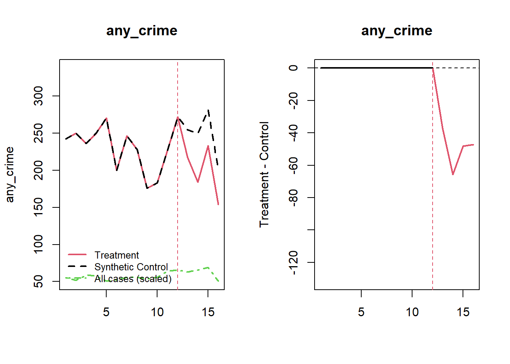
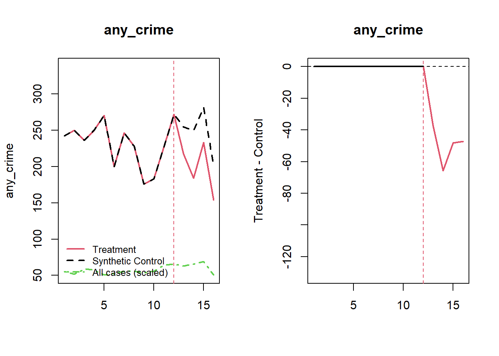

20 Quasi-experimental
In most cases, it means that you have pre- and post-intervention data.
20.1 Regression Discontinuity
-
A regression discontinuity occurs when there is a discrete change (jump) in treatment likelihood in the distribution of a continuous (or roughly continuous) variable (i.e., running/forcing/assignment variable).
- Running variable can also be time, but the argument for time to be continuous is hard to argue because usually we do not see increment of time (e.g., quarterly or annual data). Unless we have minute or hour data, then we might be able to argue for it.
-
RD is a localized experiment at the cutoff point
- Hence, we always have to qualify (perfunctory) our statement in research articles that “our research might not generalize to beyond the bandwidth.”
In reality, RD and experimental (from random assignment) estimates are very similar ((Chaplin et al. 2018; Bertanha and Imbens 2014); Mathematica ). But still, it’s hard to prove empirically for every context (there might be future study that finds a huge difference between local estimate - causal - and overall estimate - random assignment.
Threats: only valid near threshold: inference at threshold is valid on average. Interestingly, random experiment showed the validity already.
Tradeoff between efficiency and bias
Regression discontinuity is under the framework of Instrumental Variable
The hard part is to find a setting that can apply, but once you find one, it’s easy to apply
We can also have multiple cutoff lines. However, for each cutoff line, there can only be one breakup point
RD can have multiple coinciding effects (i.e., joint distribution or bundled treatment), then RD effect in this case would be the joint effect.
As the running variable becomes more discrete your framework should be Interrupted Time Series, but more granular levels you can use RD. When you have infinite data (or substantially large) the two frameworks are identical. RD is always better than [Interrupted Times Series]
There are two types of Regression Discontinuity:
- Sharp RD: Change in treatment probability at the cutoff point is 1
- Fuzzy RD: Change in treatment probability less than 1
Consider
\[ D_i = 1_{X_i > c} \]
\[ D_i = \begin{cases} D_i = 1 \text{ if } X_i > C \\ D_i = 0 \text{ if } X_i < C \end{cases} \]
where
\(D_i\) = treatment effect
\(X_i\) = score variable (continuous)
\(c\) = cutoff point
Identifying assumption of RD:
\[ \begin{aligned} \alpha_{SRDD} &= E[Y_{1i} - Y_{0i} | X_i = c] \\ &= E[Y_{1i}|X_i = c] - E[Y_{0i}|X_i = c]\\ &= \lim_{x \to c^+} E[Y_{1i}|X_i = c] - \lim_{x \to c^=} E[Y_{0i}|X_i = c] \end{aligned} \]
RDD estimates the local average treatment effect (LATE), at the cutoff point which is not at the individual or population levels.
Since researchers typically care more about the internal validity, than external validity, localness affects only external validity.
Assumptions:
Independent assignment
-
Continuity of conditional regression functions
- \(E[Y(0)|X=x]\) and \(E[Y(1)|X=x]\) are continuous in x.
RD is valid if cutpoint is exogenous (i.e., no endogenous selection) and running variable is not manipulable
General Model
\[ Y_i = \beta_0 + f(x_i) \beta_1 + [I(x_i \ge c)]\beta_2 + \epsilon_i \]
where \(f(x_i)\) is any functional form of \(x_i\)
Simple case
When \(f(x_i) = x_i\) (linear function)
\[ Y_i = \beta_0 + x_i \beta_1 + [I(x_i \ge c)]\beta_2 + \epsilon_i \]

RD gives you \(\beta_2\) (causal effect) of \(X\) on \(Y\) at the cutoff point
In practice, everyone does
\[ Y_i = \alpha_0 + f(x) \alpha _1 + [I(x_i \ge c)]\alpha_2 + [f(x_i)\times [I(x_i \ge c)]\alpha_3 + u_i \]

where we estimate different slope on different sides of the line
and if you estimate \(\alpha_3\) to be no different from 0 then we return to the simple case
Notes:
Sparse data can make \(\alpha_3\) large differential effect
People are very skeptical when you have complex \(f(x_i)\), usual simple function forms (e.g., linear, squared term, etc.) should be good
Bandwidth of \(c\) (window)
Closer to \(c\) can give you lower bias, but also efficiency
Wider \(c\) can increase bias, but higher efficiency.
Optimal bandwidth is very controversial, but usually we have to do it in the appendix for research article anyway.
-
We can either
drop observations outside of bandwidth or
weight depends on how far and close to \(c\)
20.1.1 Bunching Test
Bunching happens when people self-select to a specific value in the range of a variable (e.g., key policy thresholds).
Review paper (Kleven 2016)
Histogram in bunching is similar to a density curve (we want narrower bins, wider bins bias elasticity estimates)
We can also use bunching method to study individuals’ or firm’s responsiveness to changes in policy.
-
Under RD, we assume that we don’t have any manipulation in the running variable. However, bunching behavior is a manipulation by firms or individuals. Thus, violating this assumption.
Bunching can fix this problem by estimating what densities of individuals would have been without manipulation (i.e., manipulation-free counterfactual).
The fraction of persons who manipulated is then calculated by comparing the observed distribution to manipulation-free counterfactual distributions.
Under RD, we do not need this step because the observed and manipulation-free counterfactual distributions are assumed to be the same. RD assume there is no manipulation (i.e., assume the manipulation-free counterfactual distribution)
-
Assumptions:
Manipulation is one-sided: People move one way (i.e., either below the threshold to above the threshold or vice versa, but not to or away the threshold), which is similar to the monotonicity assumption under instrumental variable 21.3.1
Manipulation is bounded (also known as regularity assumption): so that we can use people far away from this threshold to derive at our counterfactual distribution (Blomquist et al. 2017)
Steps:
- Identify the window in which the running variable contains bunching behavior. We can do this step empirically based on data (Bosch, Dekker, and Strohmaier 2020). Additionally robustness test is needed (i.e., varying the manipulation window).
- Estimate the manipulation-free counterfactual
- Calculating the standard errors for inference can follow (R. Chetty et al. 2011) where we bootstrap resampling residuals in the estimation of the counts of individuals within bins (large data can render this step unnecessary).
If we pass the bunching test, we can move on to the Placebo Test
20.1.2 Placebo Test
Before and after the cutoff point, we can run the placebo test to see whether X’s are different).
The placebo test is where you expect your coefficients to be not different from 0.
Balance on observable characteristics on both sides
\[ Z_i = \alpha_0 + \alpha_1 f(x_i) + [I(x_i \ge c)] \alpha_2 + [f(x_i) \times I(x_i \ge c)]\alpha_3 + u_i \]
where
\(x_i\) is the running variable
\(Z_i\) is other characteristics of people (e.g., age, etc)
Theoretically, \(Z_i\) should no be affected by treatment. Hence, \(E(\alpha_2) = 0\)
Moreover, when you have multiple \(Z_i\), you typically have to simulate joint distribution (to avoid having significant coefficient based on chance).
The only way that you don’t need to generate joint distribution is when all \(Z_i\)’s are independent (unlikely in reality).
Under RD, you shouldn’t have to do any Matching Methods. Because just like when you have random assignment, there is no need to make balanced dataset before and after the cutoff. If you have to do balancing, then your RD assumptions are probably wrong in the first place.
20.1.3 Examples
20.1.3.1 Example 1
Example by Leihua Ye
\[ Y_i = \beta_0 + \beta_1 X_i + \beta_2 W_i + u_i \]
\[ X_i = \begin{cases} 1, W_i \ge c \\ 0, W_i < c \end{cases} \]
#cutoff point = 3.5
GPA <- runif(1000, 0, 4)
future_success <- 10 + 2 * GPA + 10 * (GPA >= 3.5) + rnorm(1000)
#install and load the package ‘rddtools’
#install.packages(“rddtools”)
library(rddtools)## Warning: package 'rddtools' was built under R version 4.0.5## Warning: package 'car' was built under R version 4.0.5## Warning: package 'zoo' was built under R version 4.0.5## Warning: package 'survival' was built under R version 4.0.5## Warning: package 'np' was built under R version 4.0.5
data <- rdd_data(future_success, GPA, cutpoint = 3.5)
# plot the dataset
plot(
data,
col = "red",
cex = 0.1,
xlab = "GPA",
ylab = "future_success"
)
# estimate the sharp RDD model
rdd_mod <- rdd_reg_lm(rdd_object = data, slope = "same")
summary(rdd_mod)##
## Call:
## lm(formula = y ~ ., data = dat_step1, weights = weights)
##
## Residuals:
## Min 1Q Median 3Q Max
## -3.8510 -0.6757 0.0094 0.6880 3.2894
##
## Coefficients:
## Estimate Std. Error t value Pr(>|t|)
## (Intercept) 16.95480 0.06708 252.76 <2e-16 ***
## D 10.00710 0.11916 83.98 <2e-16 ***
## x 1.97835 0.03348 59.09 <2e-16 ***
## ---
## Signif. codes: 0 '***' 0.001 '**' 0.01 '*' 0.05 '.' 0.1 ' ' 1
##
## Residual standard error: 1.023 on 997 degrees of freedom
## Multiple R-squared: 0.9587, Adjusted R-squared: 0.9586
## F-statistic: 1.157e+04 on 2 and 997 DF, p-value: < 2.2e-16
# plot the RDD model along with binned observations
plot(
rdd_mod,
cex = 0.1,
col = "red",
xlab = "GPA",
ylab = "future_success"
)20.1.3.2 Example 2
Occupational licensing can either increase or decrease market efficiency:
More information means more efficiency
Increased entry barriers (i.e., friction) increase efficiency
Components of RD
- Running variable
- Cutoff: 120 beds or above
- Treatment: you have to have the treatment before the cutoff point.
Under OLS
\[ Y_i = \alpha_0 + X_i \alpha_1 + LW_i \alpha_2 + \epsilon_i \]
where
\(LW_i\) Licensed/certified workers (in fraction format for each center).
\(Y_i\) = Quality of service
Bias in \(\alpha_2\)
Mitigation-based: terrible quality can lead to more hiring, which negatively bias \(\alpha_2\)
Preference-based: places that have higher quality staff want to keep high quality staffs.
Under RD
\[ Y_{ist} = \beta_0 + [I(Bed \ge121)_{ist}]\beta_1 + f(Size_{ist}) \beta_2 + [f(Size_{ist}) \times I(Bed \ge 121)_{ist}] \beta_3 \\ + X_{it} \delta + \gamma_s + \theta_t + \epsilon_{ist} \]
where
\(s\) = state
\(t\) = year
\(i\) = hospital
This RD is fuzzy
If right near the threshold (bandwidth), we have states with different sorting (i.e., non-random), then we need the fixed-effect for state \(s\). But then your RD assumption wrong anyway, then you won’t do it in the first place
Technically, we could also run the fixed-effect regression, but because it’s lower in the causal inference hierarchy. Hence, we don’t do it.
Moreover, in the RD framework, we don’t include \(t\) before treatment (but in the FE we have to include before and after)
If we include \(\pi_i\) for each hospital, then we don’t have variation in the causal estimates (because hardly any hospital changes their bed size in the panel)
When you have \(\beta_1\) as the intent to treat (because the treatment effect does not coincide with the intent to treat)
You cannot take those fuzzy cases out, because it will introduce the selection bias.
Note that we cannot drop cases based on behavioral choice (because we will exclude non-compliers), but we can drop when we have particular behaviors ((e.g., people like round numbers).
Thus, we have to use Instrument variable 21.3.1
Stage 1:
\[ QSW_{ist} = \alpha_0 + [I(Bed \ge121)_{ist}]\alpha_1 + f(Size_{ist}) \alpha_2 + [f(Size_{ist}) \times I(Bed \ge 121)_{ist}] \alpha_3 \\ + X_{it} \delta + \gamma_s + \theta_t + \epsilon_{ist} \]
(Note: you should have different fixed effects and error term - \(\delta, \gamma_s, \theta_t, \epsilon_{ist}\) from the first equation, but I ran out of Greek letters)
Stage 2:
\[ Y_{ist} = \gamma_0 + \gamma_1 \hat{QWS}_{ist} + f(Size_{ist}) \delta_2 + [f(Size_{ist}) \times I(Bed \ge 121)] \delta_3 \\ + X_{it} \lambda + \eta_s + \tau_t + u_{ist} \]
The bigger the jump (discontinuity), the more similar the 2 coefficients (\(\gamma_1 \approx \beta_1\)) where \(\gamma_1\) is the average treatment effect (of exposing to the policy)
\(\beta_1\) will always be closer to 0 than \(\gamma_1\)
Figure 1 shows bunching at every 5 units cutoff, but 120 is still out there.
If we have manipulable bunching, there should be decrease at 130
Since we have limited number of mass points (at the round numbers), we should clustered standard errors by the mass point
20.2 Difference-In-Differences
20.2.1 Simple Dif-n-dif
A tool developed intuitively to study “natural experiment,” but its uses are much broader.
Fixed Effects Estimator is the foundation for DID
Consider
\(D_i = 1\) treatment group
\(D_i = 0\) control group
\(T= 1\) After the treatment
\(T =0\) Before the treatment
| After (T = 1) | Before (T = 0) | |
|---|---|---|
| Treated \(D_i =1\) | \(E[Y_{1i}(1)|D_i = 1]\) | \(E[Y_{0i}(0)|D)i=1]\) |
| Control \(D_i = 0\) | \(E[Y_{0i}(1) |D_i =0]\) | \(E[Y_{0i}(0)|D_i=0]\) |
missing \(E[Y_{0i}(1)|D=1]\)
The Average Treatment Effect on Treated
\[ E[Y_1(1) - Y_0(1)|D=1] \\ = \{E[Y(1)|D=1] - E[Y(1)|D=0] \} - \{E[Y(0)|D=1] - E[Y(0)|D=0] \} \]
Assumption:
- Parallel Trends: Difference between the treatment and control groups remain constant if there were no treatment.
should be used in cases where
you observe before and after an event
you have treatment and control groups
not in cases where
treatment is not random
confounders.
Example from Princeton
create a dummy variable to indicate the time when the treatment started
mydata$time = ifelse(mydata$year >= 1994, 1, 0)create a dummy variable to identify the treatment group
mydata$treated = ifelse(mydata$country == "E" |
mydata$country == "F" | mydata$country == "G" ,
1,
0)create an interaction between time and treated
mydata$did = mydata$time * mydata$treatedestimate the DID estimator
##
## Call:
## lm(formula = y ~ treated + time + did, data = mydata)
##
## Residuals:
## Min 1Q Median 3Q Max
## -9.768e+09 -1.623e+09 1.167e+08 1.393e+09 6.807e+09
##
## Coefficients:
## Estimate Std. Error t value Pr(>|t|)
## (Intercept) 3.581e+08 7.382e+08 0.485 0.6292
## treated 1.776e+09 1.128e+09 1.575 0.1200
## time 2.289e+09 9.530e+08 2.402 0.0191 *
## did -2.520e+09 1.456e+09 -1.731 0.0882 .
## ---
## Signif. codes: 0 '***' 0.001 '**' 0.01 '*' 0.05 '.' 0.1 ' ' 1
##
## Residual standard error: 2.953e+09 on 66 degrees of freedom
## Multiple R-squared: 0.08273, Adjusted R-squared: 0.04104
## F-statistic: 1.984 on 3 and 66 DF, p-value: 0.1249The did coefficient is the differences-in-differences estimator. Treat has a negative effect
20.2.1.1 Example by Card and Krueger (1993)
found that increase in minimum wage increases employment
Experimental Setting:
New Jersey (treatment) increased minimum wage
Penn (control) did not increase minimum wage
| After | Before | |||
|---|---|---|---|---|
| Treatment | NJ | A | B | A - B |
| Control | PA | C | D | C - D |
| A - C | B - D | (A - B) - (C - D) |
where
A - B = treatment effect + effect of time (additive)
C - D = effect of time
(A - B) - (C - D) = dif-n-dif
The identifying assumptions:
Can’t have switchers
-
PA is the control group
is a good counter factual
is what NJ would look like if they hadn’t had the treatment
\[ Y_{jt} = \beta_0 + NJ_j \beta_1 + POST_t \beta_2 + (NJ_j \times POST_t)\beta_3+ X_{jt}\beta_4 + \epsilon_{jt} \]
where
\(j\) = restaurant
\(NJ\) = dummy where 1 = NJ, and 0 = PA
\(POST\) = dummy where 1 = post, and 0 = pre
We don’t need \(\beta_4\) in our model to have unbiased \(\beta_3\), but including it would give our coefficients efficiency
If we use \(\Delta Y_{jt}\) as the dependent variable, we don’t need \(POST_t \beta_2\) anymore
Alternative model specification is that the authors use NJ high wage restaurant as control group (still choose those that are close to the border)
The reason why they can’t control for everything (PA + NJ high wage) is because it’s hard to interpret the causal treatment
Dif-n-dif utilizes similarity in pretrend of the dependent variables. However, this is neither a necessary nor sufficient for the identifying assumption.
It’s not sufficient because they can have multiple treatments (technically, you could include more control, but your treatment can’t interact)
It’s not necessary because trends can e parallel after treatment
However, we can’t never be certain; we just try to find evidence consistent with our theory so that dif-n-dif can work.
Notice that we don’t need before treatment the levels of the dependent variable to be the same (e.g., same wage average in both NJ and PA), dif-n-dif only needs pre-trend (i.e., slope) to be the same for the two groups.
20.2.1.2 Example by Butcher, McEwan, and Weerapana (2014)
Theory:
-
Highest achieving students are usually in hard science. Why?
Hard to give students students the benefit of doubt for hard science
How unpleasant and how easy to get a job. Degrees with lower market value typically want to make you feel more pleasant
Under OLS
\[ E_{ij} = \beta_0 + X_i \beta_1 + G_j \beta_2 + \epsilon_{ij} \]
where
\(X_i\) = student attributes
\(\beta_2\) = causal estimate (from grade change)
\(E_{ij}\) = Did you choose to enroll in major \(j\)
\(G_j\) = grade given in major \(j\)
Examine \(\hat{\beta}_2\)
Negative bias: Endogenous response because department with lower enrollment rate will give better grade
Positive bias: hard science is already having best students (i.e., ability), so if they don’t their grades can be even lower
Under dif-n-dif
\[ Y_{idt} = \beta_0 + POST_t \beta_1 + Treat_d \beta_2 + (POST_t \times Treat_d)\beta_3 + X_{idt} + \epsilon_{idt} \]
where
- \(Y_{idt}\) = grade average
| Intercept | Treat | Post | Treat*Post | |
|---|---|---|---|---|
| Treat Pre | 1 | 1 | 0 | 0 |
| Treat Post | 1 | 1 | 1 | 1 |
| Control Pre | 1 | 0 | 0 | 0 |
| Control Post | 1 | 0 | 1 | 0 |
| Average for pre-control \(\beta_0\) |
A more general specification of the dif-n-dif is that
\[ Y_{idt} = \alpha_0 + (POST_t \times Treat_d) \alpha_1 + \theta_d + \delta_t + X_{idt} + u_{idt} \]
where
\((\theta_d + \delta_t)\) richer , more df than \(Treat_d \beta_2 + Post_t \beta_1\) (because fixed effects subsume Post and treat)
\(\alpha_1\) should be equivalent to \(\beta_3\) (if your model assumptions are correct)
Under causal inference, \(R^2\) is not so important.
20.2.2 Staggered Dif-n-dif
20.2.2.1 Example by Doleac and Hansen (2020)
The purpose of banning a checking box for ex-criminal was banned because we thought that it gives more access to felons
Even if we ban the box, employers wouldn’t just change their behaviors. But then the unintended consequence is that employers statistically discriminate based on race
3 types of ban the box
- Public employer only
- Private employer with government contract
- All employers
Main identification strategy
- If any county in the Metropolitan Statistical Area (MSA) adopts ban the box, it means the whole MSA is treated. Or if the state adopts “ban the ban,” every county is treated
Under Simple Dif-n-dif
\[ Y_{it} = \beta_0 + \beta_1 Post_t + \beta_2 treat_i + \beta_2 (Post_t \times Treat_i) + \epsilon_{it} \]
But if there is no common post time, then we should use Staggered Dif-n-dif
\[ E_{imrt} = \alpha + \beta_1 BTB_{imt} W_{imt} + \beta_2 BTB_{mt} + \beta_3 BTB_{mt} H_{imt}+ \delta_m + D_{imt} \beta_5 + \lambda_{rt} + \delta_m\times f(t) \beta_7 + e_{imrt} \]
where
\(i\) = person; \(m\) = MSA; \(r\) = region (US regions e.g., midwest) ; \(r\) = region; \(t\) = year
\(W\) = White; \(B\) = Black; \(H\) = Hispanic
\(\beta_1 BTB_{imt} W_{imt} + \beta_2 BTB_{mt} + \beta_3 BTB_{mt} H_{imt}\) are the 3 dif-n-dif variables (\(BTB\) = “ban the box”)
\(\delta_m\) = dummy for MSI
\(D_{imt}\) = control for people
\(\lambda_{rt}\) = region by time fixed effect
\(\delta_m \times f(t)\) = linear time trend within MSA (but we should not need this if we have good pre-trend)
If we put \(\lambda_r - \lambda_t\) (separately) we will more broad fixed effect, while \(\lambda_{rt}\) will give us deeper and narrower fixed effect.
Before running this model, we have to drop all other races. And \(\beta_1, \beta_2, \beta_3\) are not collinear because there are all interaction terms with \(BTB_{mt}\)
If we just want to estimate the model for black men, we will modify it to be
\[ E_{imrt} = \alpha + BTB_{mt} \beta_1 + \delta_m + D_{imt} \beta_5 + \lambda_{rt} + (\delta_m \times f(t)) \beta_7 + e_{imrt} \]
\[ E_{imrt} = \alpha + BTB_{m (t - 3t)} \theta_1 + BTB_{m(t-2)} \theta_2 + BTB_{mt} \theta_4 \\ + BTB_{m(t+1)}\theta_5 + BTB_{m(t+2)}\theta_6 + BTB_{m(t+3t)}\theta_7 \\ + [\delta_m + D_{imt}\beta_5 + \lambda_r + (\delta_m \times (f(t))\beta_7 + e_{imrt}] \]
We have to leave \(BTB_{m(t-1)}\theta_3\) out for the category would not be perfect collinearity
So the year before BTB (\(\theta_1, \theta_2, \theta_3\)) should be similar to each other (i.e., same pre-trend). Remember, we only run for places with BTB.
If \(\theta_2\) is statistically different from \(\theta_3\) (baseline), then there could be a problem, but it could also make sense if we have pre-trend announcement.
Example by Philipp Leppert replicating Card and Krueger (1994)
Example by Anthony Schmidt
20.3 Synthetic Control
Synthetic control method (SCM) is a generalization of the dif-in-dif model
Advantages over dif-in-dif:
- Maximization of the observable similarity between control and treatment (maybe also unobservables)
- Can also be used in cases where no untreated case with similar on matching dimensions with treated cases
- Objective selection of controls.
a data driven procedure to construct more comparable control groups (i.e., black box).
To do causal inference with control and treatment group using Matching Methods, you typically have to have similar covariates in the control and the treated groups. However, if you don’t methods like Propensity Scores and DID can perform rather poorly (i.e., large bias).
SCM is recommended when
- Social events to evaluate large-scale program or policy
- Only one treated case with several control candidates.
Advantages:
- From the selection criteria, researchers can understand the relative importance of each candidate
- Post-intervention outcomes are not used in synthetic. Hence, you can’t retro-fit.
- Observable similarity between control and treatment cases is maximized
Synth provides an algorithm that finds weighted combination of the comparison units where the weights are chosen such that it best resembles the values of predictors of the outcome variable for the affected units before the intervention.
20.3.1 Example 1
## Warning: package 'Synth' was built under R version 4.0.5## Warning: package 'gsynth' was built under R version 4.0.5simulate data for 10 states and 30 years. State A receives the treatment T = 20 after year 15.
set.seed(1)
year <- rep(1:30, 10)
state <- rep(LETTERS[1:10], each = 30)
X1 <- round(rnorm(300, mean = 2, sd = 1), 2)
X2 <- round(rbinom(300, 1, 0.5) + rnorm(300), 2)
Y <- round(1 + 2*X1 + rnorm(300), 2)
df <- as.data.frame(cbind(Y, X1, X2, state, year))
df$Y <- as.numeric(as.character(df$Y))
df$X1 <- as.numeric(as.character(df$X1))
df$X2 <- as.numeric(as.character(df$X2))
df$year <- as.numeric(as.character(df$year))
df$state.num <- rep(1:10, each = 30)
df$state <- as.character(df$state)
df$`T` <- ifelse(df$state == "A" & df$year >= 15, 1, 0)
df$Y <- ifelse(df$state == "A" & df$year >= 15, df$Y + 20, df$Y)
str(df)## 'data.frame': 300 obs. of 7 variables:
## $ Y : num 2.29 4.51 2.07 8.87 4.37 1.32 8 7.49 6.98 3.72 ...
## $ X1 : num 1.37 2.18 1.16 3.6 2.33 1.18 2.49 2.74 2.58 1.69 ...
## $ X2 : num 1.96 0.4 -0.75 -0.56 -0.45 1.06 0.51 -2.1 0 0.54 ...
## $ state : chr "A" "A" "A" "A" ...
## $ year : num 1 2 3 4 5 6 7 8 9 10 ...
## $ state.num: int 1 1 1 1 1 1 1 1 1 1 ...
## $ T : num 0 0 0 0 0 0 0 0 0 0 ...
dataprep.out <-
dataprep(
df,
predictors = c("X1", "X2"),
dependent = "Y",
unit.variable = "state.num",
time.variable = "year",
unit.names.variable = "state",
treatment.identifier = 1,
controls.identifier = c(2:10),
time.predictors.prior = c(1:14),
time.optimize.ssr = c(1:14),
time.plot = c(1:30)
)
synth.out <- synth(dataprep.out)##
## X1, X0, Z1, Z0 all come directly from dataprep object.
##
##
## ****************
## searching for synthetic control unit
##
##
## ****************
## ****************
## ****************
##
## MSPE (LOSS V): 9.831789
##
## solution.v:
## 0.3888387 0.6111613
##
## solution.w:
## 0.1115941 0.1832781 0.1027237 0.312091 0.06096758 0.03509706 0.05893735 0.05746256 0.07784853## $tab.pred
## Treated Synthetic Sample Mean
## X1 2.028 2.028 2.017
## X2 0.513 0.513 0.394
##
## $tab.v
## v.weights
## X1 0.389
## X2 0.611
##
## $tab.w
## w.weights unit.names unit.numbers
## 2 0.112 B 2
## 3 0.183 C 3
## 4 0.103 D 4
## 5 0.312 E 5
## 6 0.061 F 6
## 7 0.035 G 7
## 8 0.059 H 8
## 9 0.057 I 9
## 10 0.078 J 10
##
## $tab.loss
## Loss W Loss V
## [1,] 9.761708e-12 9.831789
path.plot(synth.res = synth.out,
dataprep.res = dataprep.out,
Ylab = c("Y"),
Xlab = c("Year"),
Legend = c("State A","Synthetic State A"),
Legend.position = c("topleft")
)
abline(v = 15,
lty = 2)
Gaps plot:
gaps.plot(synth.res = synth.out,
dataprep.res = dataprep.out,
Ylab = c("Gap"),
Xlab = c("Year"),
Ylim = c(-30, 30),
Main = ""
)
abline(v = 15,
lty = 2)
Alternatively, gsynth provides options to estimate iterative fixed effects, and handle multiple treated units at tat time.
Here, we use two=way fixed effects and bootstrapped standard errors
gsynth.out <- gsynth(
Y ~ `T` + X1 + X2,
data = df,
index = c("state", "year"),
force = "two-way",
CV = TRUE,
r = c(0, 5),
se = TRUE,
inference = "parametric",
nboots = 1000,
parallel = F # TRUE
)## Cross-validating ...
## r = 0; sigma2 = 1.13533; IC = 0.95632; PC = 0.96713; MSPE = 1.65502
## r = 1; sigma2 = 0.96885; IC = 1.54420; PC = 4.30644; MSPE = 1.33375
## r = 2; sigma2 = 0.81855; IC = 2.08062; PC = 6.58556; MSPE = 1.27341*
## r = 3; sigma2 = 0.71670; IC = 2.61125; PC = 8.35187; MSPE = 1.79319
## r = 4; sigma2 = 0.62823; IC = 3.10156; PC = 9.59221; MSPE = 2.02301
## r = 5; sigma2 = 0.55497; IC = 3.55814; PC = 10.48406; MSPE = 2.79596
##
## r* = 2
##
##
Simulating errors .............
Bootstrapping ...
## ..........
plot(gsynth.out)
plot(gsynth.out, type = "counterfactual")
plot(gsynth.out, type = "counterfactual", raw = "all") # shows estimations for the control cases
20.3.2 Example 2
by Leihua Ye
## [1] 774 17
head(basque)## regionno regionname year gdpcap sec.agriculture sec.energy sec.industry
## 1 1 Spain (Espana) 1955 2.354542 NA NA NA
## 2 1 Spain (Espana) 1956 2.480149 NA NA NA
## 3 1 Spain (Espana) 1957 2.603613 NA NA NA
## 4 1 Spain (Espana) 1958 2.637104 NA NA NA
## 5 1 Spain (Espana) 1959 2.669880 NA NA NA
## 6 1 Spain (Espana) 1960 2.869966 NA NA NA
## sec.construction sec.services.venta sec.services.nonventa school.illit
## 1 NA NA NA NA
## 2 NA NA NA NA
## 3 NA NA NA NA
## 4 NA NA NA NA
## 5 NA NA NA NA
## 6 NA NA NA NA
## school.prim school.med school.high school.post.high popdens invest
## 1 NA NA NA NA NA NA
## 2 NA NA NA NA NA NA
## 3 NA NA NA NA NA NA
## 4 NA NA NA NA NA NA
## 5 NA NA NA NA NA NA
## 6 NA NA NA NA NA NAtransform data to be used in synth()
dataprep.out <- dataprep(
foo = basque,
predictors = c(
"school.illit",
"school.prim",
"school.med",
"school.high",
"school.post.high",
"invest"
),
predictors.op = "mean",
# the operator
time.predictors.prior = 1964:1969,
#the entire time frame from the #beginning to the end
special.predictors = list(
list("gdpcap", 1960:1969, "mean"),
list("sec.agriculture", seq(1961, 1969, 2), "mean"),
list("sec.energy", seq(1961, 1969, 2), "mean"),
list("sec.industry", seq(1961, 1969, 2), "mean"),
list("sec.construction", seq(1961, 1969, 2), "mean"),
list("sec.services.venta", seq(1961, 1969, 2), "mean"),
list("sec.services.nonventa", seq(1961, 1969, 2), "mean"),
list("popdens", 1969, "mean")
),
dependent = "gdpcap",
# dv
unit.variable = "regionno",
#identifying unit numbers
unit.names.variable = "regionname",
#identifying unit names
time.variable = "year",
#time-periods
treatment.identifier = 17,
#the treated case
controls.identifier = c(2:16, 18),
#the control cases; all others #except number 17
time.optimize.ssr = 1960:1969,
#the time-period over which to optimize
time.plot = 1955:1997
)#the entire time period before/after the treatmentwhere
X1 = the control case before the treatment
X0 = the control cases after the treatment
Z1: the treatment case before the treatment
Z0: the treatment case after the treatment
synth.out = synth(data.prep.obj = dataprep.out, method = "BFGS")##
## X1, X0, Z1, Z0 all come directly from dataprep object.
##
##
## ****************
## searching for synthetic control unit
##
##
## ****************
## ****************
## ****************
##
## MSPE (LOSS V): 0.008864606
##
## solution.v:
## 0.02773094 1.194e-07 1.60609e-05 0.0007163836 1.486e-07 0.002423908 0.0587055 0.2651997 0.02851006 0.291276 0.007994382 0.004053188 0.009398579 0.303975
##
## solution.w:
## 2.53e-08 4.63e-08 6.44e-08 2.81e-08 3.37e-08 4.844e-07 4.2e-08 4.69e-08 0.8508145 9.75e-08 3.2e-08 5.54e-08 0.1491843 4.86e-08 9.89e-08 1.162e-07Calculate the difference between the real basque region and the synthetic control
gaps = dataprep.out$Y1plot - (dataprep.out$Y0plot
%*% synth.out$solution.w)
gaps[1:3,1]## 1955 1956 1957
## 0.15023473 0.09168035 0.03716475## [1] "tab.pred" "tab.v" "tab.w" "tab.loss"
synth.tables$tab.pred[1:13,]## Treated Synthetic Sample Mean
## school.illit 39.888 256.337 170.786
## school.prim 1031.742 2730.104 1127.186
## school.med 90.359 223.340 76.260
## school.high 25.728 63.437 24.235
## school.post.high 13.480 36.153 13.478
## invest 24.647 21.583 21.424
## special.gdpcap.1960.1969 5.285 5.271 3.581
## special.sec.agriculture.1961.1969 6.844 6.179 21.353
## special.sec.energy.1961.1969 4.106 2.760 5.310
## special.sec.industry.1961.1969 45.082 37.636 22.425
## special.sec.construction.1961.1969 6.150 6.952 7.276
## special.sec.services.venta.1961.1969 33.754 41.104 36.528
## special.sec.services.nonventa.1961.1969 4.072 5.371 7.111Relative importance of each unit
synth.tables$tab.w[8:14, ]## w.weights unit.names unit.numbers
## 9 0.000 Castilla-La Mancha 9
## 10 0.851 Cataluna 10
## 11 0.000 Comunidad Valenciana 11
## 12 0.000 Extremadura 12
## 13 0.000 Galicia 13
## 14 0.149 Madrid (Comunidad De) 14
## 15 0.000 Murcia (Region de) 15
# plot the changes before and after the treatment
path.plot(
synth.res = synth.out,
dataprep.res = dataprep.out,
Ylab = "real per-capita gdp (1986 USD, thousand)",
Xlab = "year",
Ylim = c(0, 12),
Legend = c("Basque country",
"synthetic Basque country"),
Legend.position = "bottomright"
)
gaps.plot(
synth.res = synth.out,
dataprep.res = dataprep.out,
Ylab = "gap in real per - capita GDP (1986 USD, thousand)",
Xlab = "year",
Ylim = c(-1.5, 1.5),
Main = NA
)
Doubly Robust Difference-in-Differences
Example from DRDID package
## Warning: package 'DRDID' was built under R version 4.0.5
data(nsw_long)
# Form the Lalonde sample with CPS comparison group
eval_lalonde_cps <- subset(nsw_long, nsw_long$treated == 0 | nsw_long$sample == 2)Estimate Average Treatment Effect on Treated using Improved Locally Efficient Doubly Robust DID estimator
out <-
drdid(
yname = "re",
tname = "year",
idname = "id",
dname = "experimental",
xformla = ~ age + educ + black + married + nodegree + hisp + re74,
data = eval_lalonde_cps,
panel = TRUE
)
summary(out)## Call:
## drdid(yname = "re", tname = "year", idname = "id", dname = "experimental",
## xformla = ~age + educ + black + married + nodegree + hisp +
## re74, data = eval_lalonde_cps, panel = TRUE)
## ------------------------------------------------------------------
## Further improved locally efficient DR DID estimator for the ATT:
##
## ATT Std. Error t value Pr(>|t|) [95% Conf. Interval]
## -901.2703 393.6247 -2.2897 0.022 -1672.7747 -129.766
## ------------------------------------------------------------------
## Estimator based on panel data.
## Outcome regression est. method: weighted least squares.
## Propensity score est. method: inverse prob. tilting.
## Analytical standard error.
## ------------------------------------------------------------------
## See Sant'Anna and Zhao (2020) for details.20.3.3 Example 3
by Synth package’s authors
synth() requires
\(X_1\) vector of treatment predictors
\(X_0\) matrix of same variables for control group
\(Z_1\) vector of outcome variable for treatment group
\(Z_0\) matrix of outcome variable for control group
use dataprep() to prepare data in the format that can be used throughout the Synth package
dataprep.out <- dataprep(
foo = basque,
predictors = c(
"school.illit",
"school.prim",
"school.med",
"school.high",
"school.post.high",
"invest"
),
predictors.op = "mean",
time.predictors.prior = 1964:1969,
special.predictors = list(
list("gdpcap", 1960:1969 , "mean"),
list("sec.agriculture", seq(1961, 1969, 2), "mean"),
list("sec.energy", seq(1961, 1969, 2), "mean"),
list("sec.industry", seq(1961, 1969, 2), "mean"),
list("sec.construction", seq(1961, 1969, 2), "mean"),
list("sec.services.venta", seq(1961, 1969, 2), "mean"),
list("sec.services.nonventa", seq(1961, 1969, 2), "mean"),
list("popdens", 1969, "mean")
),
dependent = "gdpcap",
unit.variable = "regionno",
unit.names.variable = "regionname",
time.variable = "year",
treatment.identifier = 17,
controls.identifier = c(2:16, 18),
time.optimize.ssr = 1960:1969,
time.plot = 1955:1997
)find optimal weights that identifies the synthetic control for the treatment group
synth.out <- synth(data.prep.obj = dataprep.out, method = "BFGS")##
## X1, X0, Z1, Z0 all come directly from dataprep object.
##
##
## ****************
## searching for synthetic control unit
##
##
## ****************
## ****************
## ****************
##
## MSPE (LOSS V): 0.008864606
##
## solution.v:
## 0.02773094 1.194e-07 1.60609e-05 0.0007163836 1.486e-07 0.002423908 0.0587055 0.2651997 0.02851006 0.291276 0.007994382 0.004053188 0.009398579 0.303975
##
## solution.w:
## 2.53e-08 4.63e-08 6.44e-08 2.81e-08 3.37e-08 4.844e-07 4.2e-08 4.69e-08 0.8508145 9.75e-08 3.2e-08 5.54e-08 0.1491843 4.86e-08 9.89e-08 1.162e-07
gaps <- dataprep.out$Y1plot - (dataprep.out$Y0plot %*% synth.out$solution.w)
gaps[1:3, 1]## 1955 1956 1957
## 0.15023473 0.09168035 0.03716475
synth.tables <-
synth.tab(dataprep.res = dataprep.out, synth.res = synth.out)
names(synth.tables) # you can pick tables to see ## [1] "tab.pred" "tab.v" "tab.w" "tab.loss"
path.plot(
synth.res = synth.out,
dataprep.res = dataprep.out,
Ylab = "real per-capita GDP (1986 USD, thousand)",
Xlab = "year",
Ylim = c(0, 12),
Legend = c("Basque country",
"synthetic Basque country"),
Legend.position = "bottomright"
)
gaps.plot(
synth.res = synth.out,
dataprep.res = dataprep.out,
Ylab = "gap in real per-capita GDP (1986 USD, thousand)",
Xlab = "year",
Ylim = c(-1.5, 1.5),
Main = NA
)
You could also run placebo tests
20.3.4 Example 4
by Michael Robbins and Steven Davenport who are authors of MicroSynth with the following improvements:
Standardization
use.survey = TRUEand permutation (perm = 250andjack = TRUE) for placebo testsOmnibus statistic (set to
omnibus.var) for multiple outcome variablesincorporate multiple follow-up periods
end.post
Notes:
-
Both predictors and outcome will be used to match units before intervention
Outcome variable has to be time-variant
Predictors are time-invariant
library(microsynth)## Warning: package 'microsynth' was built under R version 4.0.5
data("seattledmi")
cov.var <- c("TotalPop", "BLACK", "HISPANIC", "Males_1521", "HOUSEHOLDS",
"FAMILYHOUS", "FEMALE_HOU", "RENTER_HOU", "VACANT_HOU")
match.out <- c("i_felony", "i_misdemea", "i_drugs", "any_crime")
sea1 <- microsynth(
seattledmi,
idvar = "ID",
timevar = "time",
intvar = "Intervention",
start.pre = 1,
end.pre = 12,
end.post = 16,
match.out = match.out, # outcome variable will be matched on exactly
match.covar = cov.var, # specify covariates will be matched on exactly
result.var = match.out, # used to report results
omnibus.var = match.out, # feature in the omnibus p-value
test = "lower",
n.cores = min(parallel::detectCores(), 2)
)## Calculating weights...## Created main weights for synthetic control: Time = 1.03## Matching summary for main weights:## Targets Weighted.Control All.scaled
## Intercept 39 39.0002 39.0000
## TotalPop 2994 2994.0519 2384.7477
## BLACK 173 173.0010 190.5224
## HISPANIC 149 149.0026 159.2682
## Males_1521 49 49.0000 97.3746
## HOUSEHOLDS 1968 1968.0340 1113.5588
## FAMILYHOUS 519 519.0108 475.1876
## FEMALE_HOU 101 101.0010 81.1549
## RENTER_HOU 1868 1868.0203 581.9340
## VACANT_HOU 160 160.0115 98.4222
## i_felony.12 14 14.0000 4.9023
## i_felony.11 11 11.0002 4.6313
## i_felony.10 9 9.0000 3.0741
## i_felony.9 5 5.0000 3.2642
## i_felony.8 20 20.0000 4.4331
## i_felony.7 8 8.0000 3.7617
## i_felony.6 13 13.0000 3.0012
## i_felony.5 20 20.0007 3.1549
## i_felony.4 10 10.0000 4.0246
## i_felony.3 7 7.0000 3.3693
## i_felony.2 13 13.0002 3.2803
## i_felony.1 12 12.0000 3.4381
## i_misdemea.12 15 15.0002 4.2470
## i_misdemea.11 12 12.0000 4.6070
## i_misdemea.10 12 12.0000 4.0772
## i_misdemea.9 14 14.0000 3.7414
## i_misdemea.8 12 12.0000 3.9680
## i_misdemea.7 20 20.0000 4.2551
## i_misdemea.6 16 16.0005 3.5594
## i_misdemea.5 24 24.0000 3.5635
## i_misdemea.4 21 21.0002 4.3360
## i_misdemea.3 21 21.0000 4.3846
## i_misdemea.2 14 14.0000 3.5352
## i_misdemea.1 16 16.0000 4.1540
## i_drugs.12 13 13.0000 1.6543
## i_drugs.11 8 8.0000 1.5128
## i_drugs.10 3 3.0000 1.3227
## i_drugs.9 4 4.0000 0.9788
## i_drugs.8 4 4.0000 1.1123
## i_drugs.7 10 10.0000 1.0516
## i_drugs.6 4 4.0000 1.2377
## i_drugs.5 2 2.0000 1.2296
## i_drugs.4 1 1.0000 1.1245
## i_drugs.3 5 5.0000 1.3550
## i_drugs.2 12 12.0000 1.1366
## i_drugs.1 8 8.0002 1.3591
## any_crime.12 272 272.0012 65.3398
## any_crime.11 227 227.0017 64.2396
## any_crime.10 183 183.0010 55.6929
## any_crime.9 176 176.0005 53.2377
## any_crime.8 228 228.0005 55.8143
## any_crime.7 246 246.0024 55.8062
## any_crime.6 200 200.0010 52.8292
## any_crime.5 270 270.0014 50.6531
## any_crime.4 250 250.0010 57.2946
## any_crime.3 236 236.0010 58.8681
## any_crime.2 250 250.0012 51.5429
## any_crime.1 242 242.0010 55.1145
##
## Calculation of weights complete: Total time = 1.68
##
## Calculating basic statistics for end.post = 16...
## Completed calculation of basic statistics for end.post = 16. Time = 3.22
##
## Calculating survey statistics for end.post = 16...
## Completed survey statistics for main weights: Time = 5.51
## Completed calculation of survey statistics for end.post = 16. Time = 5.51
##
## microsynth complete: Overall time = 13.59
sea1## microsynth object
##
## Scope:
## Units: Total: 9642 Treated: 39 Untreated: 9603
## Study Period(s): Pre-period: 1 - 12 Post-period: 13 - 16
## Constraints: Exact Match: 58 Minimized Distance: 0
## Time-variant outcomes:
## Exact Match: i_felony, i_misdemea, i_drugs, any_crime (4)
## Minimized Distance: (0)
## Time-invariant covariates:
## Exact Match: TotalPop, BLACK, HISPANIC, Males_1521, HOUSEHOLDS, FAMILYHOUS, FEMALE_HOU, RENTER_HOU, VACANT_HOU (9)
## Minimized Distance: (0)
##
## Results:
## end.post = 16
## Trt Con Pct.Chng Linear.pVal Linear.Lower Linear.Upper
## i_felony 46 68.22 -32.6% 0.0109 -50.3% -8.4%
## i_misdemea 45 71.80 -37.3% 0.0019 -52.8% -16.7%
## i_drugs 20 23.76 -15.8% 0.2559 -46.4% 32.1%
## any_crime 788 986.44 -20.1% 0.0146 -32.9% -4.9%
## Omnibus -- -- -- 0.0006 -- --
summary(sea1)## Weight Balance Table:
##
## Targets Weighted.Control All.scaled
## Intercept 39 39.000239 39.0000000
## TotalPop 2994 2994.051921 2384.7476665
## BLACK 173 173.000957 190.5224020
## HISPANIC 149 149.002632 159.2682016
## Males_1521 49 49.000000 97.3746111
## HOUSEHOLDS 1968 1968.033976 1113.5588052
## FAMILYHOUS 519 519.010767 475.1876167
## FEMALE_HOU 101 101.000957 81.1549471
## RENTER_HOU 1868 1868.020338 581.9340386
## VACANT_HOU 160 160.011485 98.4222153
## i_felony.12 14 14.000000 4.9023024
## i_felony.11 11 11.000239 4.6313006
## i_felony.10 9 9.000000 3.0740510
## i_felony.9 5 5.000000 3.2641568
## i_felony.8 20 20.000000 4.4331052
## i_felony.7 8 8.000000 3.7616677
## i_felony.6 13 13.000000 3.0012446
## i_felony.5 20 20.000718 3.1549471
## i_felony.4 10 10.000000 4.0245800
## i_felony.3 7 7.000000 3.3693217
## i_felony.2 13 13.000239 3.2803360
## i_felony.1 12 12.000000 3.4380834
## i_misdemea.12 15 15.000239 4.2470442
## i_misdemea.11 12 12.000000 4.6070317
## i_misdemea.10 12 12.000000 4.0771624
## i_misdemea.9 14 14.000000 3.7414437
## i_misdemea.8 12 12.000000 3.9679527
## i_misdemea.7 20 20.000000 4.2551338
## i_misdemea.6 16 16.000479 3.5594275
## i_misdemea.5 24 24.000000 3.5634723
## i_misdemea.4 21 21.000239 4.3360299
## i_misdemea.3 21 21.000000 4.3845675
## i_misdemea.2 14 14.000000 3.5351587
## i_misdemea.1 16 16.000000 4.1540137
## i_drugs.12 13 13.000000 1.6543248
## i_drugs.11 8 8.000000 1.5127567
## i_drugs.10 3 3.000000 1.3226509
## i_drugs.9 4 4.000000 0.9788426
## i_drugs.8 4 4.000000 1.1123211
## i_drugs.7 10 10.000000 1.0516490
## i_drugs.6 4 4.000000 1.2377100
## i_drugs.5 2 2.000000 1.2296204
## i_drugs.4 1 1.000000 1.1244555
## i_drugs.3 5 5.000000 1.3550093
## i_drugs.2 12 12.000000 1.1365899
## i_drugs.1 8 8.000239 1.3590541
## any_crime.12 272 272.001196 65.3397635
## any_crime.11 227 227.001675 64.2395769
## any_crime.10 183 183.000957 55.6929060
## any_crime.9 176 176.000479 53.2377100
## any_crime.8 228 228.000479 55.8142502
## any_crime.7 246 246.002393 55.8061605
## any_crime.6 200 200.000957 52.8291848
## any_crime.5 270 270.001436 50.6530803
## any_crime.4 250 250.000957 57.2946484
## any_crime.3 236 236.000957 58.8680772
## any_crime.2 250 250.001196 51.5429371
## any_crime.1 242 242.000957 55.1144991
##
## Results:
##
## end.post = 16
## Trt Con Pct.Chng Linear.pVal Linear.Lower Linear.Upper
## i_felony 46 68.22 -32.6% 0.0109 -50.3% -8.4%
## i_misdemea 45 71.80 -37.3% 0.0019 -52.8% -16.7%
## i_drugs 20 23.76 -15.8% 0.2559 -46.4% 32.1%
## any_crime 788 986.44 -20.1% 0.0146 -32.9% -4.9%
## Omnibus -- -- -- 0.0006 -- --
plot_microsynth(sea1)

 

sea2 <- microsynth(seattledmi,
idvar="ID", timevar="time", intvar="Intervention",
start.pre=1, end.pre=12, end.post=c(14, 16),
match.out=match.out, match.covar=cov.var,
result.var=match.out, omnibus.var=match.out,
test="lower",
perm=250, jack=TRUE,
n.cores = min(parallel::detectCores(), 2))20.4 Selection on observables
Example
Aaronson, Barrow, and Sander (2007)
Do teachers qualifications (causally) affect student test scores?
Step 1:
\[ Y_{ijt} = \delta_0 + Y_{ij(t-1)} \delta_1 + X_{it} \delta_2 + Z_{jt} \delta_3 + \epsilon_{ijt} \]
There can always be another variable
Any observable sorting is imperfect
Step 2:
\[ Y_{ijst} = \alpha_0 + Y_{ij(t-1)}\alpha_1 + X_{it} \alpha_2 + Z_{jt} \alpha_3 + \gamma_s + u_{isjt} \]
\(\delta_3 >0\)
\(\delta_3 > \alpha_3\)
\(\gamma_s\) = school fixed effect
Sorting is less within school. Hence, we can introduce the school fixed effect
Step 3:
Find schools that look like they are putting students in class randomly (or as good as random) + we run step 2
\[ Y_{isjt} = Y_{isj(t-1)} \lambda + X_{it} \alpha_1 +Z_{jt} \alpha_{21}+ (Z_{jt} \times D_i)\alpha_{22}+ \gamma_5 + u_{isjt} \]
\(D_{it}\) is an element of \(X_{it}\)
\(Z_{it}\) = teacher experience
\[ D_{it}= \begin{cases} 1 & \text{ if high poverty} \\ 0 & \text{otherwise} \end{cases} \]
\(H_0:\) \(\alpha_{22} = 0\) test for effect heterogeneity whether the effect of teacher experience (\(Z_{jt}\)) is different
For low poverty is \(\alpha_{21}\)
For high poverty effect is \(\alpha_{21} + \alpha_{22}\)
20.5 Matching Methods
Motivation
Effect of college quality on earnings
They ultimately estimate the treatment effect on the treated of attending a top (high ACT) versus bottom (low ACT) quartile college
Matching is Selection on observables and only works if you have good observables.
Relative to OLS
- Matching makes the common support explicit (and changes default from “ignore” to “enforce”)
- Relaxes linear function form. Thus, less parametric.
It also helps if you have high ratio of controls to treatments.
For detail summary (Stuart 2010)
Matching is defined as “any method that aims to equate (or”balance“) the distribution of covariates in the treated and control groups.” (Stuart 2010, 1)
Equivalently, matching is a selection on observables identifications strategy.
If you think your OLS estimate is biased, a matching estimate (almost surely) is too.
Unconditionally, consider
\[ E(Y_i^T | T) - E(Y_i^C |C) + E(Y_i^C | T) - E(Y_i^C | T) \\ = E(Y_i^T - Y_i^C | T) + [E(Y_i^C | T) - E(Y_i^C |C)] \\ = E(Y_i^T - Y_i^C | T) + \text{selection bias} \]
where \(E(Y_i^T - Y_i^C | T)\) is the causal inference that we want to know.
Randomization eliminates the selection bias.
If we don’t have randomization, then \(E(Y_i^C | T) \neq E(Y_i^C |C)\)
Matching tries to do selection on observables \(E(Y_i^C | X, T) = E(Y_i^C|X, C)\)
Propensity Scores basically do \(E(Y_i^C| P(X) , T) = E(Y_i^C | P(X), C)\)
Matching standard errors will exceed OLS standard errors
The treatment should have larger predictive power than the control because you use treatment to pick control (not control to pick treatment).
The average treatment effect (ATE) is
\[ \frac{1}{N_T} \sum_{i=1}^{N_T} (Y_i^T - \frac{1}{N_{C_T}} \sum_{i=1}^{N_{C_T}} Y_i^C) \]
Since there is no closed-form solution for the standard error of the average treatment effect, we have to use bootstrapping to get standard error.
Professor Gary King advocates instead of using the word “matching,” we should use “pruning” (i.e., deleting observations). It is a preprocessing step where it prunes nonmatches to make control variables less important in your analysis.
Without Matching
- Imbalance data leads to model dependence lead to a lot of researcher discretion leads to bias
With Matching
- We have balance data which essentially erase human discretion
| Balance Covariates | Complete Randomization | Fully Exact |
|---|---|---|
| Observed | On average | Exact |
| Unobserved | On average | On average |
Fully blocked is superior on
imbalance
model dependence
power
efficiency
bias
research costs
robustness
Matching is used when
Outcomes are not available to select subjects for follow-up
Outcomes are available to improve precision of the estimate (i.e., reduce bias)
Hence, we can only observe one outcome of a unit (either treated or control), we can think of this problem as missing data as well. Thus, this section is closely related to Imputation (Missing Data)
In observational studies, we cannot randomize the treatment effect. Subjects select their own treatments, which could introduce selection bias (i.e., systematic differences between group differences that confound the effects of response variable differences).
Matching is used to
reduce model dependence
diagnose balance in the dataset
Assumptions of matching:
-
treatment assignment is independent of potential outcomes given the covariates
\(T \perp (Y(0),Y(1))|X\)
known as ignorability, or ignorable, no hidden bias, or unconfounded.
-
You typically satisfy this assumption when unobserved covariates correlated with observed covariates.
- But when unobserved covariates are unrelated to the observed covariates, you can use sensitivity analysis to check your result, or use “design sensitivity” (Heller, Rosenbaum, and Small 2009)
-
positive probability of receiving treatment for all X
- \(0 < P(T=1|X)<1 \forall X\)
-
Stable Unit Treatment value Assumption (SUTVA)
-
Outcomes of A are not affected by treatment of B.
- Very hard in cases where there is “spillover” effects (interactions between control and treatment). To combat, we need to reduce interactions.
-
Generalization
\(P_t\): treated population -> \(N_t\): random sample from treated
\(P_c\): control population -> \(N_c\): random sample from control
\(\mu_i\) = means ; \(\Sigma_i\) = variance covariance matrix of the \(p\) covariates in group i (\(i = t,c\))
\(X_j\) = \(p\) covariates of individual \(j\)
\(T_j\) = treatment assignment
\(Y_j\) = observed outcome
Assume: \(N_t < N_c\)
-
Treatment effect is \(\tau(x) = R_1(x) - R_0(x)\) where
\(R_1(x) = E(Y(1)|X)\)
\(R_0(x) = E(Y(0)|X)\)
-
Assume: parallel trends hence \(\tau(x) = \tau \forall x\)
- If the parallel trends are not assumed, an average effect can be estimated.
-
Common estimands:
Average effect of the treatment on the treated (ATT): effects on treatment group
Average treatment effect (ATE): effect on both treatment and control
Steps:
-
Define “closeness”: decide distance measure to be used
-
Which variables to include:
-
Ignorability (no unobserved differences between treatment and control)
Since cost of including unrelated variables is small, you should include as many as possible (unless sample size/power doesn’t allow you to because of increased variance)
Do not include variables that were affected by the treatment.
Note: if a matching variable (i.e., heavy drug users) is highly correlated to the outcome variable (i.e., heavy drinkers) , you will be better to exclude it in the matching set.
-
Which distance measures: more below
-
-
Matching methods
-
Nearest neighbor matching
Simple (greedy) matching: performs poorly when there is competition for controls.
Optimal matching: considers global distance measure
Ratio matching: to combat increase bias and reduced variation when you have k:1 matching, one can use approximations by Rubin and Thomas (1996).
With or without replacement: with replacement is typically better, but one needs to account for dependent in the matched sample when doing later analysis (can use frequency weights to combat).
-
Subclassification, Full Matching and Weighting
Neareast neighbor matching assign is 0 (control) or 1 (treated), while these methods use weights between 0 and 1.
Subclassification: distribution into multiple subclass (e.g., 5-10)
Full matching: optimal ly minimize the average of the distances between each treated unit and each control unit within each matched set.
-
Weighting adjustments: weighting technique uses propensity scores to estimate ATE. If the weights are extreme, the variance can be large not due to the underlying probabilities, but due to the estimation procure. To combat this, use (1) weight trimming, or (2) doubly -robust methods when propensity scores are used for weighing or matching.
Inverse probability of treatment weighting (IPTW) \(w_i = \frac{T_i}{\hat{e}_i} + \frac{1 - T_i}{1 - \hat{e}_i}\)
Odds \(w_i = T_i + (1-T_i) \frac{\hat{e}_i}{1-\hat{e}_i}\)
Kernel weighting (e.g., in economics) averages over multiple units in the control group.
-
Assessing Common Support
- common support means overlapping of the propensity score distributions in the treatment and control groups. Propensity score is used to discard control units from the common support. Alternatively, convex hull of the covariates in the multi-dimensional space.
-
-
Assessing the quality of matched samples (Diagnose)
-
Balance = similarity of the empirical distribution of the full set of covariates in the matched treated and control groups. Equivalently, treatment is unrelated to the covariates
- \(\tilde{p}(X|T=1) = \tilde{p}(X|T=0)\) where \(\tilde{p}\) is the empirical distribution.
-
Numerical Diagnostics
standardized difference in means of each covariate (most common), also known as“standardized bias,” “standardized difference in means.”
standardized difference of means of the propensity score (should be < 0.25) (Rubin 2001)
ratio of the variances of the propensity score in the treated and control groups (should be between 0.5 and 2). (Rubin 2001)
-
For each covariate, the ratio fo the variance of the residuals orthogonal to the propensity score in the treated and control groups.
Note: can’t use hypothesis tests or p-values because of (1) in-sample property (not population), (2) conflation of changes in balance with changes in statistical power.
-
Graphical Diagnostics
QQ plots
Empirical Distribution Plot
-
-
Estimate the treatment effect
-
After k:1
- Need to account for weights when use matching with replacement.
-
After Subclassification and Full Matching
weighting the subclass estimates by the number of treated units in each subclass for ATT
WEighting by the overall number of individual in each subclass for ATE.
Variance estimation: should incorporate uncertainties in both the matching procedure (step 3) and the estimation procedure (step 4)
-
Notes:
With missing data, use generalized boosted models, or multiple imputation (Qu and Lipkovich 2009)
-
Violation of ignorable treatment assignment (i.e., unobservables affect treatment and outcome). control by
measure pre-treatment measure of the outcome variable
find the difference in outcomes between multiple control groups. If there is a significant difference, there is evidence for violation.
find the range of correlations between unobservables and both treatment assignment and outcome to nullify the significant effect.
-
Choosing between methods
smallest standardized difference of mean across the largest number of covariates
minimize the standardized difference of means of a few particularly prognostic covariates
fest number of large standardized difference of means (> 0.25)
(Diamond and Sekhon 2013) automates the process
-
In practice
If ATE, ask if there is enough overlap of the treated and control groups’ propensity score to estimate ATE, if not use ATT instead
If ATT, ask if there are controls across the full range of the treated group
-
Choose matching method
If ATE, use IPTW or full matching
If ATT, and more controls than treated (at least 3 times), k:1 nearest neighbor without replacement
If ATT, and few controls , use subclassification, full matching, and weighting by the odds
-
Diagnostic
If balance, use regression on matched samples
If imbalance on few covariates, treat them with Mahalanobis
If imbalance on many covariates, try k:1 matching with replacement
Ways to define the distance \(D_{ij}\)
- Exact
\[ D_{ij} = \begin{cases} 0, \text{ if } X_i = X_j, \\ \infty, \text{ if } X_i \neq X_j \end{cases} \]
An advanced is Coarsened Exact Matching
- Mahalanobis
\[ D_{ij} = (X_i - X_j)'\Sigma^{-1} (X_i - X_j) \]
where
\(\Sigma\) = variance covariance matrix of X in the
control group if ATT is interested
polled treatment and control groups if ATE is interested
- Propensity score:
\[ D_{ij} = |e_i - e_j| \]
where \(e_k\) = the propensity score for individual k
An advanced is Prognosis score (Hansen 2008), but you have to know (i.e., specify) the relationship between the covariates and outcome.
- Linear propensity score
\[ D_{ij} = |logit(e_i) - logit(e_j)| \]
The exact and Mahalanobis are not good in high dimensional or non normally distributed X’s cases.
We can combine Mahalanobis matching with propensity score calipers (Rubin and Thomas 2000)
Other advanced methods for longitudinal settings
marginal structural models (Robins, Hernán, and Brumback 2000)
balanced risk set matching (Li, Propert, and Rosenbaum 2001)
Most matching methods are based on (ex-post)
propensity score
distance metric
covariates
Packages
cemCoarsened exact matchingMatchingMultivariate and propensity score matching with balance optimizationMatchItNonparametric preprocessing for parametric causal inference. Have nearest neighbor, Mahalanobis, caliper, exact, full, optimal, subclassificationMatchingFrontieroptimize balance and sample size (G. King, Lucas, and Nielsen 2016)optmatchoptimal matching with variable ratio, optimal and full matchingPSAgraphicsPropensity score graphicsrboundssensitivity analysis with matched data, examine ignorable treatment assignment assumptiontwangweighting and analysis of non-equivalent groupsCBPScovariate balancing propensity score. Can also be used in the longitudinal setting with marginal structural models.PanelMatchbased on Imai, Kim, and Wang (2018)
| Matching | Regression |
|---|---|
| Not as sensitive to the functional form of the covariates | can estimate the effect of a continuous treatment |
|
Easier to asses whether it’s working Easier to explain allows a nice visualization of an evaluation |
estimate the effect of all the variables (not just the treatment) |
| If you treatment is fairly rare, you may have a lot of control observations that are obviously no comparable | can estimate interactions of treatment with covariates |
| Less parametric | More parametric |
| Enforces common support (i.e., space where treatment and control have the same characteristics) |
However, the problem of omitted variables (i.e., those that affect both the outcome and whether observation was treated) - unobserved confounders is still present in matching methods.
Difference between matching and regression following Jorn-Ste§en Pischke’s lecture
Suppose we want to estimate the effect of treatment on the treated
\[ \begin{aligned} \delta_{TOT} &= E[ Y_{1i} - Y_{0i} | D_i = 1 ] \\ &= E\{E[Y_{1i} | X_i, D_i = 1] - E[Y_{0i}|X_i, D_i = 1]|D_i = 1\} && \text{law of itereated expectations} \end{aligned} \]
Under conditional independence
\[ E[Y_{0i} |X_i , D_i = 0 ] = E[Y_{0i} | X_i, D_i = 1] \]
then
\[ \begin{aligned} \delta_{TOT} &= E \{ E[ Y_{1i} | X_i, D_i = 1] - E[ Y_{0i}|X_i, D_i = 0 ]|D_i = 1\} \\ &= E\{E[y_i | X_i, D_i = 1] - E[y_i |X_i, D_i = 0 ] | D_i = 1\} \\ &= E[\delta_X |D_i = 1] \end{aligned} \]
where \(\delta_X\) is an X-specific difference in means at covariate value \(X_i\)
When \(X_i\) is discrete, the matching estimand is
\[ \delta_M = \sum_x \delta_x P(X_i = x |D_i = 1) \]
where \(P(X_i = x |D_i = 1)\) is the probability mass function for \(X_i\) given \(D_i = 1\)
According to Bayes rule,
\[ P(X_i = x | D_i = 1) = \frac{P(D_i = 1 | X_i = x) \times P(X_i = x)}{P(D_i = 1)} \]
hence,
\[ \begin{aligned} \delta_M &= \frac{\sum_x \delta_x P (D_i = 1 | X_i = x) P (X_i = x)}{\sum_x P(D_i = 1 |X_i = x)P(X_i = x)} \\ &= \sum_x \delta_x \frac{ P (D_i = 1 | X_i = x) P (X_i = x)}{\sum_x P(D_i = 1 |X_i = x)P(X_i = x)} \end{aligned} \]
On the other hand, suppose we have regression
\[ y_i = \sum_x d_{ix} \beta_x + \delta_R D_i + \epsilon_i \]
where
\(d_{ix}\) = dummy that indicates \(X_i = x\)
\(\beta_x\) = regression-effect for \(X_i = x\)
\(\delta_R\) = regression estimand where
\[ \begin{aligned} \delta_R &= \frac{\sum_x \delta_x [P(D_i = 1 | X_i = x) (1 - P(D_i = 1 | X_i = x))]P(X_i = x)}{\sum_x [P(D_i = 1| X_i = x)(1 - P(D_i = 1 | X_i = x))]P(X_i = x)} \\ &= \sum_x \delta_x \frac{[P(D_i = 1 | X_i = x) (1 - P(D_i = 1 | X_i = x))]P(X_i = x)}{\sum_x [P(D_i = 1| X_i = x)(1 - P(D_i = 1 | X_i = x))]P(X_i = x)} \end{aligned} \]
the difference between the regression and matching estimand is the weights they use to combine the covariate specific treatment effect \(\delta_x\)
| Type | uses weights which depend on | interpretation | makes sense because |
|---|---|---|---|
| Matching |
\(P(D_i = 1|X_i = x)\) the fraction of treated observations in a covariate cell (i.e., or the mean of \(D_i\)) |
This is larger in cells with many treated observations. | we want the effect of treatment on the treated |
| Regression |
\(P(D_i = 1 |X_i = x)(1 - P(D_i = 1| X_i ))\) the variance of \(D_i\) in the covariate cell |
This weight is largest in cells where there are half treated and half untreated observations. (this is the reason why we want to treat our sample so it is balanced, before running regular regression model, as mentioned above). | these cells will produce the lowest variance estimates of \(\delta_x\). If all the \(\delta_x\) are the same, the most efficient estimand uses the lowest variance cells most heavily. |
The goal of matching is to produce covariate balance (i.e., distributions of covariates in treatment and control groups are approximately similar as they would be in a successful randomized experiment).
20.5.1 MatchIt
Procedure typically involves (proposed by Noah Freifer using MatchIt)
- planning
- matching
- checking (balance)
- estimating the treatment effect
## Warning: package 'MatchIt' was built under R version 4.0.5
data("lalonde")examine treat on re78
- Planning
select type of effect to be estimated (e.g., mediation effect, conditional effect, marginal effect)
select the target population
select variables to match/balance (Austin 2011) (VanderWeele 2019)
- Check Initial Imbalance
# No matching; constructing a pre-match matchit object
m.out0 <- matchit(
treat ~ age + educ + race + married +
nodegree + re74 + re75,
data = lalonde,
method = NULL, # assess balance before matching
distance = "glm" # logistic regression
)
# Checking balance prior to matching
summary(m.out0)##
## Call:
## matchit(formula = treat ~ age + educ + race + married + nodegree +
## re74 + re75, data = lalonde, method = NULL, distance = "glm")
##
## Summary of Balance for All Data:
## Means Treated Means Control Std. Mean Diff. Var. Ratio eCDF Mean
## distance 0.5774 0.1822 1.7941 0.9211 0.3774
## age 25.8162 28.0303 -0.3094 0.4400 0.0813
## educ 10.3459 10.2354 0.0550 0.4959 0.0347
## raceblack 0.8432 0.2028 1.7615 . 0.6404
## racehispan 0.0595 0.1422 -0.3498 . 0.0827
## racewhite 0.0973 0.6550 -1.8819 . 0.5577
## married 0.1892 0.5128 -0.8263 . 0.3236
## nodegree 0.7081 0.5967 0.2450 . 0.1114
## re74 2095.5737 5619.2365 -0.7211 0.5181 0.2248
## re75 1532.0553 2466.4844 -0.2903 0.9563 0.1342
## eCDF Max
## distance 0.6444
## age 0.1577
## educ 0.1114
## raceblack 0.6404
## racehispan 0.0827
## racewhite 0.5577
## married 0.3236
## nodegree 0.1114
## re74 0.4470
## re75 0.2876
##
##
## Sample Sizes:
## Control Treated
## All 429 185
## Matched 429 185
## Unmatched 0 0
## Discarded 0 0- Matching
# 1:1 NN PS matching w/o replacement
m.out1 <- matchit(treat ~ age + educ + race + married +
nodegree + re74 + re75, data = lalonde,
method = "nearest", distance = "glm")
m.out1## A matchit object
## - method: Variable ratio 1:1 nearest neighbor matching without replacement
## - distance: Propensity score
## - estimated with logistic regression
## - number of obs.: 614 (original), 370 (matched)
## - target estimand: ATT
## - covariates: age, educ, race, married, nodegree, re74, re75- Check balance
Sometimes you have to make trade-off between balance and sample size.
# Checking balance after NN matching
summary(m.out1, un = FALSE)##
## Call:
## matchit(formula = treat ~ age + educ + race + married + nodegree +
## re74 + re75, data = lalonde, method = "nearest", distance = "glm")
##
## Summary of Balance for Matched Data:
## Means Treated Means Control Std. Mean Diff. Var. Ratio eCDF Mean
## distance 0.5774 0.3629 0.9739 0.7566 0.1321
## age 25.8162 25.3027 0.0718 0.4568 0.0847
## educ 10.3459 10.6054 -0.1290 0.5721 0.0239
## raceblack 0.8432 0.4703 1.0259 . 0.3730
## racehispan 0.0595 0.2162 -0.6629 . 0.1568
## racewhite 0.0973 0.3135 -0.7296 . 0.2162
## married 0.1892 0.2108 -0.0552 . 0.0216
## nodegree 0.7081 0.6378 0.1546 . 0.0703
## re74 2095.5737 2342.1076 -0.0505 1.3289 0.0469
## re75 1532.0553 1614.7451 -0.0257 1.4956 0.0452
## eCDF Max Std. Pair Dist.
## distance 0.4216 0.9740
## age 0.2541 1.3938
## educ 0.0757 1.2474
## raceblack 0.3730 1.0259
## racehispan 0.1568 1.0743
## racewhite 0.2162 0.8390
## married 0.0216 0.8281
## nodegree 0.0703 1.0106
## re74 0.2757 0.7965
## re75 0.2054 0.7381
##
## Sample Sizes:
## Control Treated
## All 429 185
## Matched 185 185
## Unmatched 244 0
## Discarded 0 0
# examine visually
plot(m.out1, type = "jitter", interactive = FALSE)

Try Full Match (i.e., every treated matches with one control, and every control with one treated).
# Full matching on a probit PS
m.out2 <- matchit(treat ~ age + educ + race + married +
nodegree + re74 + re75, data = lalonde,
method = "full", distance = "glm", link = "probit")
m.out2## A matchit object
## - method: Optimal full matching
## - distance: Propensity score
## - estimated with probit regression
## - number of obs.: 614 (original), 614 (matched)
## - target estimand: ATT
## - covariates: age, educ, race, married, nodegree, re74, re75Checking balance again
# Checking balance after full matching
summary(m.out2, un = FALSE)##
## Call:
## matchit(formula = treat ~ age + educ + race + married + nodegree +
## re74 + re75, data = lalonde, method = "full", distance = "glm",
## link = "probit")
##
## Summary of Balance for Matched Data:
## Means Treated Means Control Std. Mean Diff. Var. Ratio eCDF Mean
## distance 0.5773 0.5765 0.0040 0.9943 0.0042
## age 25.8162 25.6722 0.0201 0.4614 0.0848
## educ 10.3459 10.3693 -0.0116 0.6173 0.0194
## raceblack 0.8432 0.8389 0.0119 . 0.0043
## racehispan 0.0595 0.0500 0.0402 . 0.0095
## racewhite 0.0973 0.1111 -0.0467 . 0.0138
## married 0.1892 0.1580 0.0797 . 0.0312
## nodegree 0.7081 0.6898 0.0404 . 0.0184
## re74 2095.5737 2103.5534 -0.0016 1.3513 0.0328
## re75 1532.0553 1552.4673 -0.0063 1.5678 0.0496
## eCDF Max Std. Pair Dist.
## distance 0.0541 0.0198
## age 0.2846 1.2741
## educ 0.0597 1.2233
## raceblack 0.0043 0.0162
## racehispan 0.0095 0.4985
## racewhite 0.0138 0.3911
## married 0.0312 0.4866
## nodegree 0.0184 0.9593
## re74 0.2159 0.8533
## re75 0.2013 0.8279
##
## Sample Sizes:
## Control Treated
## All 429. 185
## Matched (ESS) 53.51 185
## Matched 429. 185
## Unmatched 0. 0
## Discarded 0. 0
Exact Matching
# Full matching on a probit PS
m.out3 <- matchit(treat ~ age + educ + race + married +
nodegree + re74 + re75, data = lalonde,
method = "exact")
m.out3## A matchit object
## - method: Exact matching
## - number of obs.: 614 (original), 25 (matched)
## - target estimand: ATT
## - covariates: age, educ, race, married, nodegree, re74, re75Subclassfication
m.out4 <- matchit(treat ~ age + educ + race + married +
nodegree + re74 + re75, data = lalonde,
method = "subclass")
m.out4## A matchit object
## - method: Subclassification (6 subclasses)
## - distance: Propensity score
## - estimated with logistic regression
## - number of obs.: 614 (original), 614 (matched)
## - target estimand: ATT
## - covariates: age, educ, race, married, nodegree, re74, re75
# Or you can use in conjunction with "nearest"
m.out4 <- matchit(treat ~ age + educ + race + married +
nodegree + re74 + re75, data = lalonde,
method = "nearest", option = "subclass")
m.out4## A matchit object
## - method: Variable ratio 1:1 nearest neighbor matching without replacement
## - distance: Propensity score
## - estimated with logistic regression
## - number of obs.: 614 (original), 370 (matched)
## - target estimand: ATT
## - covariates: age, educ, race, married, nodegree, re74, re75Optimal Matching
m.out5 <- matchit(treat ~ age + educ + race + married +
nodegree + re74 + re75, data = lalonde,
method = "optimal",ratio = 2)
m.out5## A matchit object
## - method: Variable ratio 2:1 optimal pair matching
## - distance: Propensity score
## - estimated with logistic regression
## - number of obs.: 614 (original), 555 (matched)
## - target estimand: ATT
## - covariates: age, educ, race, married, nodegree, re74, re75Genetic Matching
m.out6 <- matchit(treat ~ age + educ + race + married +
nodegree + re74 + re75, data = lalonde,
method = "genetic")## Warning: (from Matching) The key tuning parameters for optimization were are
## all left at their default values. The 'pop.size' option in particular should
## probably be increased for optimal results. For details please see the help page
## and http://sekhon.berkeley.edu/papers/MatchingJSS.pdf
m.out6## A matchit object
## - method: 1:1 genetic matching without replacement
## - distance: Propensity score
## - estimated with logistic regression
## - number of obs.: 614 (original), 370 (matched)
## - target estimand: ATT
## - covariates: age, educ, race, married, nodegree, re74, re75- Estimating the Treatment Effect
# get matched data
m.data1 <- match.data(m.out1)
head(m.data1)## treat age educ race married nodegree re74 re75 re78 distance
## NSW1 1 37 11 black 1 1 0 0 9930.0460 0.6387699
## NSW2 1 22 9 hispan 0 1 0 0 3595.8940 0.2246342
## NSW3 1 30 12 black 0 0 0 0 24909.4500 0.6782439
## NSW4 1 27 11 black 0 1 0 0 7506.1460 0.7763241
## NSW5 1 33 8 black 0 1 0 0 289.7899 0.7016387
## NSW6 1 22 9 black 0 1 0 0 4056.4940 0.6990699
## weights subclass
## NSW1 1 1
## NSW2 1 98
## NSW3 1 109
## NSW4 1 120
## NSW5 1 131
## NSW6 1 142
library("lmtest") #coeftest
library("sandwich") #vcovCL
# imbalance matched dataset
fit1 <- lm(re78 ~ treat + age + educ + race + married + nodegree +
re74 + re75, data = m.data1, weights = weights)
coeftest(fit1, vcov. = vcovCL, cluster = ~subclass)##
## t test of coefficients:
##
## Estimate Std. Error t value Pr(>|t|)
## (Intercept) -2.5816e+03 3.3209e+03 -0.7774 0.437439
## treat 1.3449e+03 7.3084e+02 1.8403 0.066552 .
## age 7.8035e+00 4.4148e+01 0.1768 0.859797
## educ 6.0220e+02 2.1007e+02 2.8667 0.004391 **
## racehispan 1.5335e+03 1.0248e+03 1.4964 0.135417
## racewhite 4.6943e+02 8.9854e+02 0.5224 0.601687
## married -1.5825e+02 9.3354e+02 -0.1695 0.865482
## nodegree 9.2328e+02 1.1496e+03 0.8032 0.422412
## re74 2.6362e-02 1.6646e-01 0.1584 0.874257
## re75 2.2068e-01 1.6771e-01 1.3158 0.189069
## ---
## Signif. codes: 0 '***' 0.001 '**' 0.01 '*' 0.05 '.' 0.1 ' ' 1treat coefficient = estimated ATT
# balance matched dataset
m.data2 <- match.data(m.out2)
fit2 <- lm(re78 ~ treat + age + educ + race + married + nodegree +
re74 + re75, data = m.data2, weights = weights)
coeftest(fit2, vcov. = vcovCL, cluster = ~subclass)##
## t test of coefficients:
##
## Estimate Std. Error t value Pr(>|t|)
## (Intercept) 2.8493e+03 3.1547e+03 0.9032 0.3667819
## treat 1.9797e+03 7.5611e+02 2.6183 0.0090589 **
## age -4.5799e+01 3.7917e+01 -1.2079 0.2275592
## educ 2.3234e+02 2.0245e+02 1.1477 0.2515594
## racehispan 9.6380e+02 1.4435e+03 0.6677 0.5045794
## racewhite 1.7067e+03 8.2231e+02 2.0755 0.0383636 *
## married 9.0378e+02 1.1858e+03 0.7622 0.4462384
## nodegree -1.2712e+03 1.2691e+03 -1.0017 0.3169017
## re74 -1.1459e-02 1.4547e-01 -0.0788 0.9372369
## re75 5.4080e-01 1.4212e-01 3.8053 0.0001561 ***
## ---
## Signif. codes: 0 '***' 0.001 '**' 0.01 '*' 0.05 '.' 0.1 ' ' 1When reporting, remember to mention
- the matching specification (method, and additional options)
- the distance measure (e.g., propensity score)
- other methods, and rationale for the final chosen method.
- balance statistics of the matched dataset.
- number of matched, unmatched, discarded
- estimation method for treatment effect.
20.5.2 MatchingFrontier
As mentioned in MatchIt, you have to make trade-off (also known as bias-variance trade-off) between balance and sample size. An automated procedure to optimize this trade-off is implemented in MatchingFrontier (G. King, Lucas, and Nielsen 2016), which solves this joint optimization problem.
I follow MatchingFrontier guide
# library(devtools)
# install_github('ChristopherLucas/MatchingFrontier')
library(MatchingFrontier)
data("lalonde")
# choose var to match on
match.on <- colnames(lalonde)[!(colnames(lalonde) %in% c('re78', 'treat'))]
match.on## [1] "age" "education" "black" "hispanic" "married" "nodegree"
## [7] "re74" "re75"
# Mahanlanobis frontier (default)
mahal.frontier <-
makeFrontier(
dataset = lalonde,
treatment = "treat",
match.on = match.on
)## Calculating Mahalanobis distances...
## Calculating theoretical frontier...
## Calculating information for plotting the frontier...
mahal.frontier## An imbalance frontier with 997 points.
# L1 frontier
L1.frontier <-
makeFrontier(
dataset = lalonde,
treatment = 'treat',
match.on = match.on,
QOI = 'SATT',
metric = 'L1',
ratio = 'fixed'
)## Calculating L1 binnings...
## Calculating L1 frontier... This may take a few minutes...
L1.frontier## An imbalance frontier with 976 points.
# estimate effects along the frontier
# Set base form
my.form <-
as.formula(re78 ~ treat + age + black + education + hispanic + married + nodegree + re74 + re75)
# Estimate effects for the mahalanobis frontier
mahal.estimates <-
estimateEffects(
mahal.frontier,
're78 ~ treat',
mod.dependence.formula = my.form,
continuous.vars = c('age', 'education', 're74', 're75'),
prop.estimated = .1,
means.as.cutpoints = TRUE
)##
|
| | 0%
|
|= | 1%
|
|= | 2%
|
|== | 3%
|
|=== | 4%
|
|==== | 5%
|
|==== | 6%
|
|===== | 7%
|
|====== | 8%
|
|====== | 9%
|
|======= | 10%
|
|======== | 11%
|
|======== | 12%
|
|========= | 13%
|
|========== | 14%
|
|=========== | 15%
|
|=========== | 16%
|
|============ | 17%
|
|============= | 18%
|
|============= | 19%
|
|============== | 20%
|
|=============== | 21%
|
|================ | 22%
|
|================ | 23%
|
|================= | 24%
|
|================== | 25%
|
|================== | 26%
|
|=================== | 27%
|
|==================== | 28%
|
|===================== | 29%
|
|===================== | 30%
|
|====================== | 31%
|
|======================= | 32%
|
|======================= | 33%
|
|======================== | 34%
|
|========================= | 35%
|
|========================= | 36%
|
|========================== | 37%
|
|=========================== | 38%
|
|============================ | 39%
|
|============================ | 40%
|
|============================= | 41%
|
|============================== | 42%
|
|============================== | 43%
|
|=============================== | 44%
|
|================================ | 45%
|
|================================= | 46%
|
|================================= | 47%
|
|================================== | 48%
|
|=================================== | 49%
|
|=================================== | 51%
|
|==================================== | 52%
|
|===================================== | 53%
|
|===================================== | 54%
|
|====================================== | 55%
|
|======================================= | 56%
|
|======================================== | 57%
|
|======================================== | 58%
|
|========================================= | 59%
|
|========================================== | 60%
|
|========================================== | 61%
|
|=========================================== | 62%
|
|============================================ | 63%
|
|============================================= | 64%
|
|============================================= | 65%
|
|============================================== | 66%
|
|=============================================== | 67%
|
|=============================================== | 68%
|
|================================================ | 69%
|
|================================================= | 70%
|
|================================================= | 71%
|
|================================================== | 72%
|
|=================================================== | 73%
|
|==================================================== | 74%
|
|==================================================== | 75%
|
|===================================================== | 76%
|
|====================================================== | 77%
|
|====================================================== | 78%
|
|======================================================= | 79%
|
|======================================================== | 80%
|
|========================================================= | 81%
|
|========================================================= | 82%
|
|========================================================== | 83%
|
|=========================================================== | 84%
|
|=========================================================== | 85%
|
|============================================================ | 86%
|
|============================================================= | 87%
|
|============================================================== | 88%
|
|============================================================== | 89%
|
|=============================================================== | 90%
|
|================================================================ | 91%
|
|================================================================ | 92%
|
|================================================================= | 93%
|
|================================================================== | 94%
|
|================================================================== | 95%
|
|=================================================================== | 96%
|
|==================================================================== | 97%
|
|===================================================================== | 98%
|
|===================================================================== | 99%
|
|======================================================================| 100%
# Estimate effects for the L1 frontier
L1.estimates <-
estimateEffects(
L1.frontier,
're78 ~ treat',
mod.dependence.formula = my.form,
continuous.vars = c('age', 'education', 're74', 're75'),
prop.estimated = .1,
means.as.cutpoints = TRUE
)##
|
| | 0%
|
|= | 1%
|
|= | 2%
|
|== | 3%
|
|=== | 4%
|
|==== | 5%
|
|==== | 6%
|
|===== | 7%
|
|====== | 8%
|
|====== | 9%
|
|======= | 10%
|
|======== | 11%
|
|========= | 12%
|
|========= | 13%
|
|========== | 14%
|
|=========== | 15%
|
|============ | 16%
|
|============ | 18%
|
|============= | 19%
|
|============== | 20%
|
|============== | 21%
|
|=============== | 22%
|
|================ | 23%
|
|================= | 24%
|
|================= | 25%
|
|================== | 26%
|
|=================== | 27%
|
|=================== | 28%
|
|==================== | 29%
|
|===================== | 30%
|
|====================== | 31%
|
|====================== | 32%
|
|======================= | 33%
|
|======================== | 34%
|
|========================= | 35%
|
|========================= | 36%
|
|========================== | 37%
|
|=========================== | 38%
|
|=========================== | 39%
|
|============================ | 40%
|
|============================= | 41%
|
|============================== | 42%
|
|============================== | 43%
|
|=============================== | 44%
|
|================================ | 45%
|
|================================ | 46%
|
|================================= | 47%
|
|================================== | 48%
|
|=================================== | 49%
|
|=================================== | 51%
|
|==================================== | 52%
|
|===================================== | 53%
|
|====================================== | 54%
|
|====================================== | 55%
|
|======================================= | 56%
|
|======================================== | 57%
|
|======================================== | 58%
|
|========================================= | 59%
|
|========================================== | 60%
|
|=========================================== | 61%
|
|=========================================== | 62%
|
|============================================ | 63%
|
|============================================= | 64%
|
|============================================= | 65%
|
|============================================== | 66%
|
|=============================================== | 67%
|
|================================================ | 68%
|
|================================================ | 69%
|
|================================================= | 70%
|
|================================================== | 71%
|
|=================================================== | 72%
|
|=================================================== | 73%
|
|==================================================== | 74%
|
|===================================================== | 75%
|
|===================================================== | 76%
|
|====================================================== | 77%
|
|======================================================= | 78%
|
|======================================================== | 79%
|
|======================================================== | 80%
|
|========================================================= | 81%
|
|========================================================== | 82%
|
|========================================================== | 84%
|
|=========================================================== | 85%
|
|============================================================ | 86%
|
|============================================================= | 87%
|
|============================================================= | 88%
|
|============================================================== | 89%
|
|=============================================================== | 90%
|
|================================================================ | 91%
|
|================================================================ | 92%
|
|================================================================= | 93%
|
|================================================================== | 94%
|
|================================================================== | 95%
|
|=================================================================== | 96%
|
|==================================================================== | 97%
|
|===================================================================== | 98%
|
|===================================================================== | 99%
|
|======================================================================| 100%
# Plot covariates means
# plotPrunedMeans()
# Plot estimates (deprecated)
# plotEstimates(
# L1.estimates,
# ylim = c(-10000, 3000),
# cex.lab = 1.4,
# cex.axis = 1.4,
# panel.first = grid(NULL, NULL, lwd = 2,)
# )
# Plot estimates
plotMeans(L1.frontier)
# parallel plot
parallelPlot(
L1.frontier,
N = 400,
variables = c('age', 're74', 're75', 'black'),
treated.col = 'blue',
control.col = 'gray'
)
# export matched dataset
matched.data <- generateDataset(L1.frontier, N = 400) # take 400 units20.5.3 Propensity Scores
Even though I mention the propensity scores matching method here, it is no longer recommended to use such method in research and publication (G. King and Nielsen 2019) because it increases
imbalance
inefficiency
model dependence: small changes in the model specification lead to big changes in model results
bias
PSM tries to accomplish complete randomization while other methods try to achieve fully blocked. Hence, you probably better off use any other methods.
Propensity is “the probability of receiving the treatment given the observed covariates.” (Rosenbaum and Rubin 1985)
Equivalently, it can to understood as the probability of being treated.
\[ e_i (X_i) = P(T_i = 1 | X_i) \]
Estimation using
logistic regression
-
Non parametric methods:
boosted CART
generalized boosted models (gbm)
Steps by Gary King’s slides
reduce k elements of X to scalar
\(\pi_i \equiv P(T_i = 1|X) = \frac{1}{1+e^{X_i \beta}}\)
Distance (\(X_c, X_t\)) = \(|\pi_c - \pi_t|\)
match each treated unit to the nearest control unit
control units: not reused; pruned if unused
prune matches if distances > caliper
In the best case scenario, you randomly prune, which increases imbalance
Other methods dominate because they try to match exactly hence
\(X_c = X_t \to \pi_c = \pi_t\) (exact match leads to equal propensity scores) but
\(\pi_c = \pi_t \nrightarrow X_c = X_t\) (equal propensity scores do not necessarily lead to exact match)
Do not include/control for irrelevant covariates because it leads your PSM to be more random, hence more imbalance
What you left with after pruning is more important than what you start with then throw out.
Diagnostics:
balance of the covariates
no need to concern about collinearity
can’t use c-stat or stepwise because those model fit stat do not apply
20.5.4 Mahalanobis Distance
Approximates fully blocked experiment
Distance \((X_c,X_t)\) = \(\sqrt{(X_c - X_t)'S^{-1}(X_c - X_t)}\)
where \(S^{-1}\) standardize the distance
In application we use Euclidean distance.
Prune unused control units, and prune matches if distance > caliper
20.5.5 Coarsened Exact Matching
Steps from Gray King’s slides International Methods Colloquium talk 2015
Temporarily coarsen X
-
Apply exact matching to the coarsened X, C(X)
sort observation into strata, each with unique values of C(X)
prune stratum with 0 treated or 0 control units
Pass on original (uncoarsened) units except those pruned
Properties:
-
Monotonic imbalance bounding (MIB) matching method
- maximum imbalance between the treated and control chosen ex ante
meets congruence principle
robust to measurement error
can be implemented with multiple imputation
works well for multi-category treatments
Assumptions:
- Ignorability (i.e., no omitted variable bias)
More detail in (Iacus, King, and Porro 2012)
Example by package’s authors
## Warning: package 'cem' was built under R version 4.0.5## Warning: package 'lattice' was built under R version 4.0.5
data(LeLonde)
Le <- data.frame(na.omit(LeLonde)) # remove missing data
# treated and control groups
tr <- which(Le$treated==1)
ct <- which(Le$treated==0)
ntr <- length(tr)
nct <- length(ct)
# unadjusted, biased difference in means
mean(Le$re78[tr]) - mean(Le$re78[ct])## [1] 759.0479
# pre-treatment covariates
vars <-
c(
"age",
"education",
"black",
"married",
"nodegree",
"re74",
"re75",
"hispanic",
"u74",
"u75",
"q1"
)
# overall imbalance statistics
imbalance(group=Le$treated, data=Le[vars]) # L1 = 0.902##
## Multivariate Imbalance Measure: L1=0.902
## Percentage of local common support: LCS=5.8%
##
## Univariate Imbalance Measures:
##
## statistic type L1 min 25% 50% 75%
## age -0.252373042 (diff) 5.102041e-03 0 0 0.0000 -1.0000
## education 0.153634710 (diff) 8.463851e-02 1 0 1.0000 1.0000
## black -0.010322734 (diff) 1.032273e-02 0 0 0.0000 0.0000
## married -0.009551495 (diff) 9.551495e-03 0 0 0.0000 0.0000
## nodegree -0.081217371 (diff) 8.121737e-02 0 -1 0.0000 0.0000
## re74 -18.160446880 (diff) 5.551115e-17 0 0 284.0715 806.3452
## re75 101.501761679 (diff) 5.551115e-17 0 0 485.6310 1238.4114
## hispanic -0.010144756 (diff) 1.014476e-02 0 0 0.0000 0.0000
## u74 -0.045582186 (diff) 4.558219e-02 0 0 0.0000 0.0000
## u75 -0.065555292 (diff) 6.555529e-02 0 0 0.0000 0.0000
## q1 7.494021189 (Chi2) 1.067078e-01 NA NA NA NA
## max
## age -6.0000
## education 1.0000
## black 0.0000
## married 0.0000
## nodegree 0.0000
## re74 -2139.0195
## re75 490.3945
## hispanic 0.0000
## u74 0.0000
## u75 0.0000
## q1 NA
# drop other variables that are not pre-treatmentt matching variables
todrop <- c("treated", "re78")
imbalance(group=Le$treated, data=Le, drop=todrop)##
## Multivariate Imbalance Measure: L1=0.902
## Percentage of local common support: LCS=5.8%
##
## Univariate Imbalance Measures:
##
## statistic type L1 min 25% 50% 75%
## age -0.252373042 (diff) 5.102041e-03 0 0 0.0000 -1.0000
## education 0.153634710 (diff) 8.463851e-02 1 0 1.0000 1.0000
## black -0.010322734 (diff) 1.032273e-02 0 0 0.0000 0.0000
## married -0.009551495 (diff) 9.551495e-03 0 0 0.0000 0.0000
## nodegree -0.081217371 (diff) 8.121737e-02 0 -1 0.0000 0.0000
## re74 -18.160446880 (diff) 5.551115e-17 0 0 284.0715 806.3452
## re75 101.501761679 (diff) 5.551115e-17 0 0 485.6310 1238.4114
## hispanic -0.010144756 (diff) 1.014476e-02 0 0 0.0000 0.0000
## u74 -0.045582186 (diff) 4.558219e-02 0 0 0.0000 0.0000
## u75 -0.065555292 (diff) 6.555529e-02 0 0 0.0000 0.0000
## q1 7.494021189 (Chi2) 1.067078e-01 NA NA NA NA
## max
## age -6.0000
## education 1.0000
## black 0.0000
## married 0.0000
## nodegree 0.0000
## re74 -2139.0195
## re75 490.3945
## hispanic 0.0000
## u74 0.0000
## u75 0.0000
## q1 NAautomated coarsening
mat <- cem(treatment = "treated", data = Le, drop = "re78",keep.all=TRUE)##
## Using 'treated'='1' as baseline group
mat## G0 G1
## All 392 258
## Matched 95 84
## Unmatched 297 174
# mat$wcoarsening by explicit user choice
# categorial variables
levels(Le$q1) # grouping option## [1] "agree" "disagree" "neutral"
## [4] "no opinion" "strongly agree" "strongly disagree"
q1.grp <- list(c("strongly agree", "agree"), c("neutral", "no opinion"), c("strongly disagree","disagree")) # if you want ordered categories
# continuous variables
table(Le$education)##
## 3 4 5 6 7 8 9 10 11 12 13 14 15
## 1 5 4 6 12 55 106 146 173 113 19 9 1
educut <- c(0, 6.5, 8.5, 12.5, 17) # use cutpoints
mat1 <- cem(treatment = "treated", data = Le, drop = "re78", cutpoints = list(education=educut), grouping=list(q1=q1.grp))##
## Using 'treated'='1' as baseline group
mat1## G0 G1
## All 392 258
## Matched 158 115
## Unmatched 234 143Can also use progressive coarsening method to control the number of matches.
cemcan also handle some missingness.
20.5.6 Genetic Matching
- GM uses iterative checking process of propensity scores, which combines propensity scores and Mahalanobis distance.
- GM is arguably “superior” method than nearest neighbor or full matching in imbalanced data
Use a genetic search algorithm to find weights for each covariate such that we have optimal balance.
-
Implementation
could use with replacement
-
balance can be based on
paired t-tests (dichotomous variables)
Kolmogorov-Smirnov (multinomial and continuous)
Packages
Matching
## Warning: package 'Matching' was built under R version 4.0.5## Loading required package: MASS## Warning: package 'MASS' was built under R version 4.0.5## ##
## ## Matching (Version 4.9-9, Build Date: 2021-03-15)
## ## See http://sekhon.berkeley.edu/matching for additional documentation.
## ## Please cite software as:
## ## Jasjeet S. Sekhon. 2011. ``Multivariate and Propensity Score Matching
## ## Software with Automated Balance Optimization: The Matching package for R.''
## ## Journal of Statistical Software, 42(7): 1-52.
## ##
data(lalonde)
attach(lalonde)
#The covariates we want to match on
X = cbind(age, educ, black, hisp, married, nodegr, u74, u75, re75, re74)
#The covariates we want to obtain balance on
BalanceMat <- cbind(age, educ, black, hisp, married, nodegr, u74, u75, re75, re74,
I(re74*re75))
#
#Let's call GenMatch() to find the optimal weight to give each
#covariate in 'X' so as we have achieved balance on the covariates in
#'BalanceMat'. This is only an example so we want GenMatch to be quick
#so the population size has been set to be only 16 via the 'pop.size'
#option. This is *WAY* too small for actual problems.
#For details see http://sekhon.berkeley.edu/papers/MatchingJSS.pdf.
#
genout <- GenMatch(Tr=treat, X=X, BalanceMatrix=BalanceMat, estimand="ATE", M=1,
pop.size=16, max.generations=10, wait.generations=1)##
##
## Mon Nov 22 14:39:20 2021
## Domains:
## 0.000000e+00 <= X1 <= 1.000000e+03
## 0.000000e+00 <= X2 <= 1.000000e+03
## 0.000000e+00 <= X3 <= 1.000000e+03
## 0.000000e+00 <= X4 <= 1.000000e+03
## 0.000000e+00 <= X5 <= 1.000000e+03
## 0.000000e+00 <= X6 <= 1.000000e+03
## 0.000000e+00 <= X7 <= 1.000000e+03
## 0.000000e+00 <= X8 <= 1.000000e+03
## 0.000000e+00 <= X9 <= 1.000000e+03
## 0.000000e+00 <= X10 <= 1.000000e+03
##
## Data Type: Floating Point
## Operators (code number, name, population)
## (1) Cloning........................... 1
## (2) Uniform Mutation.................. 2
## (3) Boundary Mutation................. 2
## (4) Non-Uniform Mutation.............. 2
## (5) Polytope Crossover................ 2
## (6) Simple Crossover.................. 2
## (7) Whole Non-Uniform Mutation........ 2
## (8) Heuristic Crossover............... 2
## (9) Local-Minimum Crossover........... 0
##
## SOFT Maximum Number of Generations: 10
## Maximum Nonchanging Generations: 1
## Population size : 16
## Convergence Tolerance: 1.000000e-03
##
## Not Using the BFGS Derivative Based Optimizer on the Best Individual Each Generation.
## Not Checking Gradients before Stopping.
## Using Out of Bounds Individuals.
##
## Maximization Problem.
## GENERATION: 0 (initializing the population)
## Lexical Fit..... 1.747466e-01 1.795176e-01 1.795176e-01 2.755332e-01 3.173114e-01 3.173114e-01 3.857502e-01 3.937274e-01 7.390086e-01 7.390086e-01 8.024999e-01 8.910491e-01 9.688444e-01 9.917159e-01 9.989079e-01 1.000000e+00 1.000000e+00 1.000000e+00 1.000000e+00 1.000000e+00 1.000000e+00 1.000000e+00
## #unique......... 16, #Total UniqueCount: 16
## var 1:
## best............ 3.758091e+02
## mean............ 4.897395e+02
## variance........ 9.320437e+04
## var 2:
## best............ 4.944768e+02
## mean............ 5.218593e+02
## variance........ 6.830606e+04
## var 3:
## best............ 1.880547e+02
## mean............ 4.838327e+02
## variance........ 1.030481e+05
## var 4:
## best............ 8.125678e+02
## mean............ 4.445995e+02
## variance........ 8.135038e+04
## var 5:
## best............ 9.058067e+02
## mean............ 4.753729e+02
## variance........ 1.184631e+05
## var 6:
## best............ 1.733063e+02
## mean............ 4.782400e+02
## variance........ 8.948808e+04
## var 7:
## best............ 5.766096e+02
## mean............ 4.722599e+02
## variance........ 7.199369e+04
## var 8:
## best............ 3.736603e+02
## mean............ 4.108310e+02
## variance........ 8.454007e+04
## var 9:
## best............ 5.987977e+02
## mean............ 3.762504e+02
## variance........ 7.462591e+04
## var 10:
## best............ 5.352480e+02
## mean............ 4.491692e+02
## variance........ 8.739694e+04
##
## GENERATION: 1
## Lexical Fit..... 1.747466e-01 1.795176e-01 1.795176e-01 2.755332e-01 3.173114e-01 3.173114e-01 3.857502e-01 3.937274e-01 7.390086e-01 7.390086e-01 8.024999e-01 8.910491e-01 9.688444e-01 9.917159e-01 9.989079e-01 1.000000e+00 1.000000e+00 1.000000e+00 1.000000e+00 1.000000e+00 1.000000e+00 1.000000e+00
## #unique......... 12, #Total UniqueCount: 28
## var 1:
## best............ 3.758091e+02
## mean............ 3.556052e+02
## variance........ 6.953381e+03
## var 2:
## best............ 4.944768e+02
## mean............ 5.087018e+02
## variance........ 3.156408e+03
## var 3:
## best............ 1.880547e+02
## mean............ 1.798786e+02
## variance........ 4.539894e+03
## var 4:
## best............ 8.125678e+02
## mean............ 6.669235e+02
## variance........ 5.540181e+04
## var 5:
## best............ 9.058067e+02
## mean............ 9.117080e+02
## variance........ 3.397508e+03
## var 6:
## best............ 1.733063e+02
## mean............ 2.041563e+02
## variance........ 3.552940e+04
## var 7:
## best............ 5.766096e+02
## mean............ 4.995566e+02
## variance........ 2.585541e+04
## var 8:
## best............ 3.736603e+02
## mean............ 5.068097e+02
## variance........ 4.273372e+04
## var 9:
## best............ 5.987977e+02
## mean............ 4.917595e+02
## variance........ 3.084008e+04
## var 10:
## best............ 5.352480e+02
## mean............ 5.445554e+02
## variance........ 8.587358e+03
##
## GENERATION: 2
## Lexical Fit..... 1.747466e-01 1.795176e-01 1.795176e-01 2.755332e-01 3.173114e-01 3.173114e-01 3.857502e-01 3.937274e-01 7.390086e-01 7.390086e-01 8.024999e-01 8.910491e-01 9.688444e-01 9.917159e-01 9.989079e-01 1.000000e+00 1.000000e+00 1.000000e+00 1.000000e+00 1.000000e+00 1.000000e+00 1.000000e+00
## #unique......... 8, #Total UniqueCount: 36
## var 1:
## best............ 3.758091e+02
## mean............ 3.562379e+02
## variance........ 2.385358e+03
## var 2:
## best............ 4.944768e+02
## mean............ 4.956205e+02
## variance........ 1.566415e+02
## var 3:
## best............ 1.880547e+02
## mean............ 2.166244e+02
## variance........ 6.801191e+03
## var 4:
## best............ 8.125678e+02
## mean............ 8.059555e+02
## variance........ 6.565662e+02
## var 5:
## best............ 9.058067e+02
## mean............ 8.852994e+02
## variance........ 3.056774e+03
## var 6:
## best............ 1.733063e+02
## mean............ 2.210856e+02
## variance........ 2.369334e+04
## var 7:
## best............ 5.766096e+02
## mean............ 5.482967e+02
## variance........ 4.613957e+03
## var 8:
## best............ 3.736603e+02
## mean............ 3.943396e+02
## variance........ 1.895797e+03
## var 9:
## best............ 5.987977e+02
## mean............ 6.005851e+02
## variance........ 3.308459e+02
## var 10:
## best............ 5.352480e+02
## mean............ 5.444285e+02
## variance........ 4.950778e+02
##
## 'wait.generations' limit reached.
## No significant improvement in 1 generations.
##
## Solution Lexical Fitness Value:
## 1.747466e-01 1.795176e-01 1.795176e-01 2.755332e-01 3.173114e-01 3.173114e-01 3.857502e-01 3.937274e-01 7.390086e-01 7.390086e-01 8.024999e-01 8.910491e-01 9.688444e-01 9.917159e-01 9.989079e-01 1.000000e+00 1.000000e+00 1.000000e+00 1.000000e+00 1.000000e+00 1.000000e+00 1.000000e+00
##
## Parameters at the Solution:
##
## X[ 1] : 3.758091e+02
## X[ 2] : 4.944768e+02
## X[ 3] : 1.880547e+02
## X[ 4] : 8.125678e+02
## X[ 5] : 9.058067e+02
## X[ 6] : 1.733063e+02
## X[ 7] : 5.766096e+02
## X[ 8] : 3.736603e+02
## X[ 9] : 5.987977e+02
## X[10] : 5.352480e+02
##
## Solution Found Generation 1
## Number of Generations Run 2
##
## Mon Nov 22 14:39:21 2021
## Total run time : 0 hours 0 minutes and 1 seconds
#The outcome variable
Y=re78/1000
#
# Now that GenMatch() has found the optimal weights, let's estimate
# our causal effect of interest using those weights
#
mout <- Match(Y=Y, Tr=treat, X=X, estimand="ATE", Weight.matrix=genout)
summary(mout)##
## Estimate... 1.9046
## AI SE...... 0.82198
## T-stat..... 2.3171
## p.val...... 0.020498
##
## Original number of observations.............. 445
## Original number of treated obs............... 185
## Matched number of observations............... 445
## Matched number of observations (unweighted). 597
#
#Let's determine if balance has actually been obtained on the variables of interest
#
mb <- MatchBalance(treat~age +educ+black+ hisp+ married+ nodegr+ u74+ u75+
re75+ re74+ I(re74*re75),
match.out=mout, nboots=500)##
## ***** (V1) age *****
## Before Matching After Matching
## mean treatment........ 25.816 25.112
## mean control.......... 25.054 24.902
## std mean diff......... 10.655 3.1286
##
## mean raw eQQ diff..... 0.94054 0.36181
## med raw eQQ diff..... 1 0
## max raw eQQ diff..... 7 8
##
## mean eCDF diff........ 0.025364 0.0099025
## med eCDF diff........ 0.022193 0.0075377
## max eCDF diff........ 0.065177 0.028476
##
## var ratio (Tr/Co)..... 1.0278 0.98286
## T-test p-value........ 0.26594 0.27553
## KS Bootstrap p-value.. 0.504 0.842
## KS Naive p-value...... 0.7481 0.96884
## KS Statistic.......... 0.065177 0.028476
##
##
## ***** (V2) educ *****
## Before Matching After Matching
## mean treatment........ 10.346 10.189
## mean control.......... 10.088 10.222
## std mean diff......... 12.806 -1.9653
##
## mean raw eQQ diff..... 0.40541 0.098827
## med raw eQQ diff..... 0 0
## max raw eQQ diff..... 2 2
##
## mean eCDF diff........ 0.028698 0.0070591
## med eCDF diff........ 0.012682 0.0033501
## max eCDF diff........ 0.12651 0.033501
##
## var ratio (Tr/Co)..... 1.5513 1.0458
## T-test p-value........ 0.15017 0.38575
## KS Bootstrap p-value.. 0.02 0.454
## KS Naive p-value...... 0.062873 0.89105
## KS Statistic.......... 0.12651 0.033501
##
##
## ***** (V3) black *****
## Before Matching After Matching
## mean treatment........ 0.84324 0.8382
## mean control.......... 0.82692 0.8382
## std mean diff......... 4.4767 0
##
## mean raw eQQ diff..... 0.016216 0
## med raw eQQ diff..... 0 0
## max raw eQQ diff..... 1 0
##
## mean eCDF diff........ 0.0081601 0
## med eCDF diff........ 0.0081601 0
## max eCDF diff........ 0.01632 0
##
## var ratio (Tr/Co)..... 0.92503 1
## T-test p-value........ 0.64736 1
##
##
## ***** (V4) hisp *****
## Before Matching After Matching
## mean treatment........ 0.059459 0.08764
## mean control.......... 0.10769 0.08764
## std mean diff......... -20.341 0
##
## mean raw eQQ diff..... 0.048649 0
## med raw eQQ diff..... 0 0
## max raw eQQ diff..... 1 0
##
## mean eCDF diff........ 0.024116 0
## med eCDF diff........ 0.024116 0
## max eCDF diff........ 0.048233 0
##
## var ratio (Tr/Co)..... 0.58288 1
## T-test p-value........ 0.064043 1
##
##
## ***** (V5) married *****
## Before Matching After Matching
## mean treatment........ 0.18919 0.16854
## mean control.......... 0.15385 0.16854
## std mean diff......... 8.9995 0
##
## mean raw eQQ diff..... 0.037838 0
## med raw eQQ diff..... 0 0
## max raw eQQ diff..... 1 0
##
## mean eCDF diff........ 0.017672 0
## med eCDF diff........ 0.017672 0
## max eCDF diff........ 0.035343 0
##
## var ratio (Tr/Co)..... 1.1802 1
## T-test p-value........ 0.33425 1
##
##
## ***** (V6) nodegr *****
## Before Matching After Matching
## mean treatment........ 0.70811 0.78876
## mean control.......... 0.83462 0.78652
## std mean diff......... -27.751 0.54991
##
## mean raw eQQ diff..... 0.12432 0.001675
## med raw eQQ diff..... 0 0
## max raw eQQ diff..... 1 1
##
## mean eCDF diff........ 0.063254 0.00083752
## med eCDF diff........ 0.063254 0.00083752
## max eCDF diff........ 0.12651 0.001675
##
## var ratio (Tr/Co)..... 1.4998 0.9923
## T-test p-value........ 0.0020368 0.73901
##
##
## ***** (V7) u74 *****
## Before Matching After Matching
## mean treatment........ 0.70811 0.73258
## mean control.......... 0.75 0.73034
## std mean diff......... -9.1895 0.50714
##
## mean raw eQQ diff..... 0.037838 0.001675
## med raw eQQ diff..... 0 0
## max raw eQQ diff..... 1 1
##
## mean eCDF diff........ 0.020946 0.00083752
## med eCDF diff........ 0.020946 0.00083752
## max eCDF diff........ 0.041892 0.001675
##
## var ratio (Tr/Co)..... 1.1041 0.99472
## T-test p-value........ 0.33033 0.31731
##
##
## ***** (V8) u75 *****
## Before Matching After Matching
## mean treatment........ 0.6 0.64494
## mean control.......... 0.68462 0.65169
## std mean diff......... -17.225 -1.4072
##
## mean raw eQQ diff..... 0.081081 0.0050251
## med raw eQQ diff..... 0 0
## max raw eQQ diff..... 1 1
##
## mean eCDF diff........ 0.042308 0.0025126
## med eCDF diff........ 0.042308 0.0025126
## max eCDF diff........ 0.084615 0.0050251
##
## var ratio (Tr/Co)..... 1.1133 1.0088
## T-test p-value........ 0.068031 0.17952
##
##
## ***** (V9) re75 *****
## Before Matching After Matching
## mean treatment........ 1532.1 1300.3
## mean control.......... 1266.9 1317.3
## std mean diff......... 8.2363 -0.5676
##
## mean raw eQQ diff..... 367.61 104.16
## med raw eQQ diff..... 0 0
## max raw eQQ diff..... 2110.2 2510.6
##
## mean eCDF diff........ 0.050834 0.0080924
## med eCDF diff........ 0.061954 0.0067002
## max eCDF diff........ 0.10748 0.021776
##
## var ratio (Tr/Co)..... 1.0763 0.97978
## T-test p-value........ 0.38527 0.8025
## KS Bootstrap p-value.. 0.044 0.824
## KS Naive p-value...... 0.16449 0.99891
## KS Statistic.......... 0.10748 0.021776
##
##
## ***** (V10) re74 *****
## Before Matching After Matching
## mean treatment........ 2095.6 2019.8
## mean control.......... 2107 2106.4
## std mean diff......... -0.23437 -1.768
##
## mean raw eQQ diff..... 487.98 243.25
## med raw eQQ diff..... 0 0
## max raw eQQ diff..... 8413 7870.3
##
## mean eCDF diff........ 0.019223 0.0083159
## med eCDF diff........ 0.0158 0.0067002
## max eCDF diff........ 0.047089 0.025126
##
## var ratio (Tr/Co)..... 0.7381 0.85755
## T-test p-value........ 0.98186 0.39373
## KS Bootstrap p-value.. 0.556 0.596
## KS Naive p-value...... 0.97023 0.99172
## KS Statistic.......... 0.047089 0.025126
##
##
## ***** (V11) I(re74 * re75) *****
## Before Matching After Matching
## mean treatment........ 13118591 12261673
## mean control.......... 14530303 14240665
## std mean diff......... -2.7799 -4.2761
##
## mean raw eQQ diff..... 3278733 2602379
## med raw eQQ diff..... 0 0
## max raw eQQ diff..... 188160151 223801517
##
## mean eCDF diff........ 0.022723 0.0043797
## med eCDF diff........ 0.014449 0.0033501
## max eCDF diff........ 0.061019 0.011725
##
## var ratio (Tr/Co)..... 0.69439 0.58474
## T-test p-value........ 0.79058 0.17475
## KS Bootstrap p-value.. 0.266 0.994
## KS Naive p-value...... 0.81575 1
## KS Statistic.......... 0.061019 0.011725
##
##
## Before Matching Minimum p.value: 0.0020368
## Variable Name(s): nodegr Number(s): 6
##
## After Matching Minimum p.value: 0.17475
## Variable Name(s): I(re74 * re75) Number(s): 1120.5.7 Matching for time series-cross-section data
Examples: (SCHEVE and STASAVAGE 2012) and (Acemoglu et al. 2014)
Materials from Imai et al.’s slides
Identification strategy:
Within-unit over-time variation
within-time across-units variation
20.6 Interrupted Time Series
-
Control for
Seasonable trends
Concurrent events
-
Pros (Penfold and Zhang 2013)
- control for long-term trends
-
Cons
Min of 8 data points before and 8 after an intervention
Multiple events hard to distinguish
Example by Leihua Ye
# data preparation
set.seed(1)
CaseID = rep(1:100, 6)
# intervention
Intervention = c(rep(0, 300), rep(1, 300))
Outcome_Variable = c(rnorm(300), abs(rnorm(300) * 4))
mydata = cbind(CaseID, Intervention, Outcome_Variable)
mydata = as.data.frame(mydata)
#construct a simple OLS model
model = lm(Outcome_Variable ~ Intervention, data = mydata)
summary(model)##
## Call:
## lm(formula = Outcome_Variable ~ Intervention, data = mydata)
##
## Residuals:
## Min 1Q Median 3Q Max
## -3.3050 -1.2315 -0.1734 0.8691 11.9185
##
## Coefficients:
## Estimate Std. Error t value Pr(>|t|)
## (Intercept) 0.03358 0.11021 0.305 0.761
## Intervention 3.28903 0.15586 21.103 <2e-16 ***
## ---
## Signif. codes: 0 '***' 0.001 '**' 0.01 '*' 0.05 '.' 0.1 ' ' 1
##
## Residual standard error: 1.909 on 598 degrees of freedom
## Multiple R-squared: 0.4268, Adjusted R-squared: 0.4259
## F-statistic: 445.3 on 1 and 598 DF, p-value: < 2.2e-16